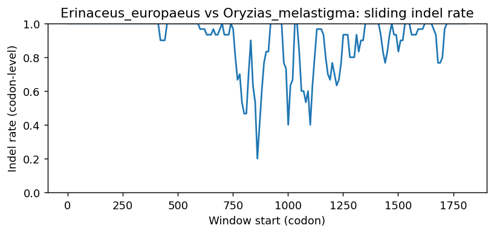

Ortholog Divergence Report
Input: IL34.valid.longest.fa · N sequences: 585 · Aligned length: 1817 codons
Reference: Erinaceus_europaeus
Quick risk overview
- LOW: 0
- INTERMEDIATE: 0
- HIGH: 170820


Composition & complexity per sequence
Saved as per_sequence_composition.csv. High low-complexity or repeat content can reduce BLAST sensitivity due to soft masking.
| id | GC | GC skew | CpG dens. | AA LCR frac | NT repeat frac | AA len | CDS len |
|---|---|---|---|---|---|---|---|
| Erinaceus_europaeus | 0.5625 | -0.01852 | 0.01825 | 0.09375 | 0.71224 | 256 | 768 |
| Mesocricetus_auratus | 0.59371 | 0.01687 | 0.03725 | 0.0515 | 0.70529 | 233 | 699 |
| Marmota_monax | 0.61111 | 0.0 | 0.03338 | 0.05 | 0.67917 | 240 | 720 |
| Loxodonta_africana | 0.60565 | 0.00737 | 0.02832 | 0.0625 | 0.69345 | 224 | 672 |
| Meles_meles | 0.62449 | 0.00654 | 0.05858 | 0.0 | 0.68027 | 245 | 735 |
| Elephantulus_edwardii | 0.62591 | 0.00465 | 0.04082 | 0.0 | 0.69287 | 229 | 687 |
| Xenopus_tropicalis | 0.39409 | 0.04167 | 0.0148 | 0.0 | 0.68309 | 203 | 609 |
| Pungitius_pungitius | 0.52381 | -0.0303 | 0.02544 | 0.08095 | 0.7619 | 210 | 630 |
| Hoplias_malabaricus | 0.45933 | -0.00694 | 0.01917 | 0.08134 | 0.72887 | 209 | 627 |
| Alexandromys_fortis | 0.56738 | -0.005 | 0.03125 | 0.07234 | 0.72199 | 235 | 705 |
| Oryzias_latipes | 0.51051 | 0.01765 | 0.03158 | 0.06306 | 0.76577 | 222 | 666 |
| Rhinopithecus_roxellana | 0.60606 | 0.00909 | 0.04138 | 0.06612 | 0.71901 | 242 | 726 |
| Hyperolius_riggenbachi | 0.4942 | 0.12752 | 0.03654 | 0.0 | 0.74627 | 201 | 603 |
| Platichthys_flesus | 0.52558 | 0.00295 | 0.04193 | 0.07907 | 0.75039 | 215 | 645 |
| Mus_caroli | 0.54894 | 0.02326 | 0.02841 | 0.07234 | 0.73901 | 235 | 705 |
| Opisthocomus_hoazin | 0.64547 | 0.0209 | 0.07915 | 0.0 | 0.82852 | 173 | 519 |
| Austrofundulus_limnaeus | 0.55949 | -0.01149 | 0.03648 | 0.05788 | 0.80171 | 311 | 933 |
| Nomascus_leucogenys | 0.60468 | 0.01595 | 0.04276 | 0.06612 | 0.72039 | 242 | 726 |
| Mirounga_angustirostris | 0.61017 | -0.01389 | 0.04243 | 0.05508 | 0.66102 | 236 | 708 |
| Lepidothrix_coronata | 0.62703 | 0.05172 | 0.05596 | 0.06486 | 0.78198 | 185 | 555 |
| Paramormyrops_kingsleyae | 0.47016 | -0.10836 | 0.01749 | 0.0524 | 0.72052 | 229 | 687 |
| Cebus_imitator | 0.59504 | 0.00926 | 0.04 | 0.07851 | 0.74105 | 242 | 726 |
| Bos_taurus | 0.62963 | -0.01357 | 0.03852 | 0.05556 | 0.69943 | 234 | 702 |
| Condylura_cristata | 0.60801 | -0.03529 | 0.02865 | 0.103 | 0.68526 | 233 | 699 |
| Eptesicus_fuscus | 0.64348 | -0.02252 | 0.0508 | 0.06087 | 0.69275 | 230 | 690 |
| Lepisosteus_oculatus | 0.54435 | -0.02222 | 0.02961 | 0.08065 | 0.77554 | 248 | 744 |
| Spea_bombifrons | 0.47695 | 0.05576 | 0.03552 | 0.0 | 0.73759 | 188 | 564 |
| Silurus_meridionalis | 0.41587 | 0.01527 | 0.00954 | 0.0 | 0.72857 | 210 | 630 |
| Dipodomys_merriami | 0.59371 | 0.00723 | 0.03582 | 0.08155 | 0.74821 | 233 | 699 |
| Saccopteryx_bilineata | 0.60159 | 0.03958 | 0.03339 | 0.0 | 0.7254 | 210 | 630 |
| Falco_cherrug | 0.62963 | 0.02941 | 0.05751 | 0.06667 | 0.8037 | 180 | 540 |
| Trichechus_manatus_latirostris | 0.62361 | 0.01559 | 0.04172 | 0.05417 | 0.67361 | 240 | 720 |
| Anguilla_rostrata | 0.5626 | 0.03468 | 0.0342 | 0.0 | 0.73821 | 205 | 615 |
| Pyrgilauda_ruficollis | 0.62407 | 0.03264 | 0.05937 | 0.06667 | 0.78148 | 180 | 540 |
| Neofelis_nebulosa | 0.5863 | -0.09213 | 0.0277 | 0.16601 | 0.60079 | 253 | 759 |
| Mastomys_coucha | 0.54468 | -0.01042 | 0.01989 | 0.05106 | 0.75035 | 235 | 705 |
| Oreochromis_aureus | 0.48062 | -0.01935 | 0.02795 | 0.0 | 0.72093 | 215 | 645 |
| Rhinopithecus_bieti | 0.60744 | 0.01134 | 0.04 | 0.06198 | 0.70661 | 242 | 726 |
| Malurus_melanocephalus | 0.62778 | 0.05605 | 0.06308 | 0.06667 | 0.83889 | 180 | 540 |
| Prionailurus_viverrinus | 0.59887 | -0.01415 | 0.0297 | 0.10593 | 0.69068 | 236 | 708 |
| Xiphophorus_maculatus | 0.54667 | 0.04607 | 0.04599 | 0.12 | 0.71111 | 225 | 675 |
| Xiphias_gladius | 0.50917 | -0.04505 | 0.0245 | 0.06881 | 0.70336 | 218 | 654 |
| Caretta_caretta | 0.56601 | 0.03207 | 0.03636 | 0.0 | 0.77888 | 202 | 606 |
| Lynx_canadensis | 0.60028 | -0.01647 | 0.03112 | 0.10593 | 0.69633 | 236 | 708 |
| Melospiza_melodia_melodia | 0.61622 | 0.02339 | 0.05957 | 0.06486 | 0.78559 | 185 | 555 |
| Gavia_stellata | 0.64815 | 0.05143 | 0.07607 | 0.06667 | 0.77778 | 180 | 540 |
| Symphalangus_syndactylus | 0.60882 | 0.02262 | 0.04552 | 0.06612 | 0.70248 | 242 | 726 |
| Panthera_uncia | 0.60028 | -0.02588 | 0.03112 | 0.10593 | 0.69068 | 236 | 708 |
| Nannospalax_galili | 0.5676 | 0.01887 | 0.02547 | 0.0 | 0.70549 | 249 | 747 |
| Brachionichthys_hirsutus | 0.47551 | -0.04319 | 0.01582 | 0.08531 | 0.75987 | 211 | 633 |
| Ovis_aries | 0.63248 | -0.01802 | 0.03994 | 0.05128 | 0.68803 | 234 | 702 |
| Pipistrellus_kuhlii | 0.66667 | 0.0 | 0.06821 | 0.10435 | 0.67681 | 230 | 690 |
| Felis_catus | 0.60028 | -0.01647 | 0.03112 | 0.10593 | 0.69068 | 236 | 708 |
| Astyanax_mexicanus | 0.47302 | -0.02013 | 0.02385 | 0.0 | 0.75714 | 210 | 630 |
| Mobula_hypostoma | 0.44129 | 0.09013 | 0.03036 | 0.06818 | 0.71023 | 176 | 528 |
| Corythoichthys_intestinalis | 0.48866 | -0.01624 | 0.03178 | 0.04422 | 0.72789 | 294 | 882 |
| Bos_javanicus | 0.63818 | -0.00446 | 0.0428 | 0.05128 | 0.69088 | 234 | 702 |
| Neoarius_graeffei | 0.45261 | 0.01805 | 0.02291 | 0.0 | 0.70425 | 204 | 612 |
| Protopterus_annectens | 0.38406 | 0.03774 | 0.00907 | 0.0 | 0.76812 | 184 | 552 |
| Calypte_anna | 0.63536 | 0.03768 | 0.06273 | 0.0 | 0.814 | 181 | 543 |
| Solea_solea | 0.52464 | 0.02762 | 0.03338 | 0.0 | 0.75362 | 230 | 690 |
| Canis_lupus_familiaris | 0.62264 | 0.00202 | 0.04156 | 0.09434 | 0.71321 | 265 | 795 |
| Cervus_canadensis | 0.64387 | 0.0 | 0.04993 | 0.12821 | 0.71083 | 234 | 702 |
| Rissa_tridactyla | 0.65 | 0.03077 | 0.07179 | 0.12 | 0.78833 | 200 | 600 |
| Puma_yagouaroundi | 0.59746 | -0.01655 | 0.0297 | 0.10593 | 0.68927 | 236 | 708 |
| Sinocyclocheilus_grahami | 0.43492 | 0.11679 | 0.01749 | 0.05714 | 0.6873 | 210 | 630 |
| Cricetulus_griseus | 0.55603 | 0.0102 | 0.02557 | 0.1234 | 0.73191 | 235 | 705 |
| Homo_sapiens | 0.61295 | 0.01573 | 0.04138 | 0.06612 | 0.69835 | 242 | 726 |
| Dromiciops_gliroides | 0.52901 | -0.03571 | 0.02838 | 0.05263 | 0.68556 | 247 | 741 |
| Myodes_glareolus | 0.56879 | -0.01247 | 0.03409 | 0.07234 | 0.73475 | 235 | 705 |
| Capra_hircus | 0.63248 | -0.01802 | 0.04137 | 0.05128 | 0.68234 | 234 | 702 |
| Camarhynchus_parvulus | 0.60721 | 0.01484 | 0.04693 | 0.06486 | 0.78919 | 185 | 555 |
| Archocentrus_centrarchus | 0.48217 | 0.00322 | 0.0295 | 0.05581 | 0.75504 | 215 | 645 |
| Odobenus_rosmarus_divergens | 0.61299 | -0.01843 | 0.04102 | 0.05508 | 0.6822 | 236 | 708 |
| Phocoena_phocoena | 0.61277 | 0.02778 | 0.03835 | 0.0 | 0.75035 | 235 | 705 |
| Poecilia_formosa | 0.54074 | 0.02466 | 0.04451 | 0.06667 | 0.73333 | 225 | 675 |
| Indicator_indicator | 0.64641 | 0.09402 | 0.06642 | 0.1326 | 0.83241 | 181 | 543 |
| Melanotaenia_boesemani | 0.4843 | 0.01235 | 0.02096 | 0.07175 | 0.7713 | 223 | 669 |
| Ovis_canadensis | 0.63248 | -0.01802 | 0.03994 | 0.05128 | 0.68803 | 234 | 702 |
| Mastacembelus_armatus | 0.51994 | -0.01227 | 0.02236 | 0.08612 | 0.73844 | 209 | 627 |
| Tupaia_chinensis | 0.6518 | -0.04943 | 0.05335 | 0.05576 | 0.71995 | 269 | 807 |
| Petaurus_breviceps_papuanus | 0.54251 | 0.0 | 0.02027 | 0.0 | 0.68016 | 247 | 741 |
| Eleutherodactylus_coqui | 0.56716 | 0.05848 | 0.06811 | 0.0597 | 0.85075 | 201 | 603 |
| Dipodomys_ordii | 0.59514 | 0.00481 | 0.03582 | 0.07725 | 0.7525 | 233 | 699 |
| Notothenia_coriiceps | 0.51746 | 0.00613 | 0.05087 | 0.07619 | 0.7254 | 210 | 630 |
| Chrysemys_picta_bellii | 0.71429 | -0.01026 | 0.13028 | 0.13736 | 0.70513 | 182 | 546 |
| Hirundo_rustica | 0.61982 | 0.02907 | 0.06137 | 0.06486 | 0.78559 | 185 | 555 |
| Limanda_limanda | 0.53178 | 0.01458 | 0.04193 | 0.07907 | 0.76899 | 215 | 645 |
| Entelurus_aequoreus | 0.49765 | -0.01887 | 0.02821 | 0.08451 | 0.7543 | 213 | 639 |
| Leucoraja_erinaceus | 0.41856 | 0.11312 | 0.01898 | 0.06818 | 0.74053 | 176 | 528 |
| Peromyscus_californicus_insignis | 0.55887 | -0.01015 | 0.03125 | 0.05106 | 0.75887 | 235 | 705 |
| Corvus_moneduloides | 0.62222 | 0.03571 | 0.0538 | 0.06667 | 0.78519 | 180 | 540 |
| Pleurodeles_waltl | 0.49221 | -0.02532 | 0.039 | 0.0 | 0.75701 | 214 | 642 |
| Neogale_vison | 0.62313 | 0.0 | 0.05177 | 0.05306 | 0.65578 | 245 | 735 |
| Struthio_camelus | 0.61852 | 0.06587 | 0.05751 | 0.06667 | 0.8037 | 180 | 540 |
| Hippopotamus_amphibius_kiboko | 0.61708 | 0.03125 | 0.03724 | 0.0 | 0.72865 | 242 | 726 |
| Lagenorhynchus_albirostris | 0.6156 | 0.01382 | 0.03835 | 0.0 | 0.7305 | 235 | 705 |
| Ursus_arctos | 0.61017 | -0.02315 | 0.04243 | 0.0 | 0.68079 | 236 | 708 |
| Haplochromis_burtoni | 0.47752 | -0.01299 | 0.0264 | 0.0 | 0.69922 | 215 | 645 |
| Vicugna_pacos | 0.59007 | 0.02404 | 0.02699 | 0.0 | 0.72908 | 235 | 705 |
| Lutra_lutra | 0.62177 | -0.00656 | 0.05313 | 0.05306 | 0.6966 | 245 | 735 |
| Mus_pahari | 0.5461 | 0.01818 | 0.03125 | 0.05106 | 0.74468 | 235 | 705 |
| Nipponia_nippon | 0.63889 | 0.04928 | 0.07421 | 0.06667 | 0.8037 | 180 | 540 |
| Sinocyclocheilus_rhinocerous | 0.44071 | 0.12727 | 0.01926 | 0.05769 | 0.6875 | 208 | 624 |
| Pleuronectes_platessa | 0.53178 | 0.00292 | 0.04193 | 0.07907 | 0.75659 | 215 | 645 |
| Hippocampus_zosterae | 0.48012 | -0.09554 | 0.02603 | 0.06422 | 0.75076 | 218 | 654 |
| Gambusia_affinis | 0.53185 | 0.0585 | 0.04006 | 0.12 | 0.75852 | 225 | 675 |
| Mesoplodon_densirostris | 0.61844 | 0.00917 | 0.03409 | 0.0 | 0.7078 | 235 | 705 |
| Ictidomys_tridecemlineatus | 0.61133 | -0.00431 | 0.03694 | 0.05138 | 0.66798 | 253 | 759 |
| Panthera_onca | 0.60169 | -0.02347 | 0.03253 | 0.10593 | 0.69068 | 236 | 708 |
| Melospiza_georgiana | 0.61622 | 0.02924 | 0.05776 | 0.06486 | 0.78559 | 185 | 555 |
| Acomys_russatus | 0.55461 | 0.0179 | 0.02699 | 0.11064 | 0.73617 | 235 | 705 |
| Ursus_americanus | 0.60734 | -0.0186 | 0.0396 | 0.0 | 0.68079 | 236 | 708 |
| Pelmatolapia_mariae | 0.47752 | -0.01299 | 0.02484 | 0.0 | 0.71163 | 215 | 645 |
| Sus_scrofa | 0.62695 | -0.01357 | 0.04545 | 0.05106 | 0.68369 | 235 | 705 |
| Saccopteryx_leptura | 0.61429 | 0.04393 | 0.03816 | 0.0 | 0.7127 | 210 | 630 |
| Anoplopoma_fimbria | 0.52381 | -0.01212 | 0.02544 | 0.08095 | 0.76508 | 210 | 630 |
| Motacilla_alba_alba | 0.62593 | 0.02959 | 0.06494 | 0.06667 | 0.78889 | 180 | 540 |
| Monodelphis_domestica | 0.54032 | -0.04478 | 0.02692 | 0.05242 | 0.71774 | 248 | 744 |
| Labrus_mixtus | 0.53058 | -0.04323 | 0.03522 | 0.12385 | 0.78287 | 218 | 654 |
| Mauremys_mutica | 0.595 | 0.04762 | 0.06177 | 0.0 | 0.76167 | 200 | 600 |
| Melanerpes_formicivorus | 0.70691 | -0.06931 | 0.08144 | 0.33596 | 0.64654 | 381 | 1143 |
| Mus_musculus | 0.54184 | 0.00524 | 0.02841 | 0.07234 | 0.75887 | 235 | 705 |
| Marmota_marmota_marmota | 0.59615 | 0.08602 | 0.04013 | 0.0 | 0.72276 | 208 | 624 |
| Scatophagus_argus | 0.51014 | 0.02841 | 0.02032 | 0.06522 | 0.73913 | 230 | 690 |
| Betta_splendens | 0.52535 | -0.05848 | 0.03077 | 0.05991 | 0.76037 | 217 | 651 |
| Neolamprologus_brichardi | 0.47287 | 0.00328 | 0.02329 | 0.0 | 0.70543 | 215 | 645 |
| Pseudorca_crassidens | 0.61702 | 0.01609 | 0.03977 | 0.0 | 0.73759 | 235 | 705 |
| Erpetoichthys_calabaricus | 0.49298 | -0.13167 | 0.01406 | 0.0 | 0.69298 | 190 | 570 |
| Haliaeetus_albicilla | 0.63072 | -0.07772 | 0.04255 | 0.05882 | 0.75163 | 204 | 612 |
| Chanodichthys_erythropterus | 0.43333 | 0.08425 | 0.02226 | 0.05714 | 0.65873 | 210 | 630 |
| Phyllopteryx_taeniolatus | 0.50077 | -0.0184 | 0.02923 | 0.08295 | 0.73579 | 217 | 651 |
| Pipra_filicauda | 0.62523 | 0.04899 | 0.05596 | 0.06486 | 0.78198 | 185 | 555 |
| Pan_troglodytes | 0.61019 | 0.02032 | 0.04138 | 0.06612 | 0.70386 | 242 | 726 |
| Poecile_atricapillus | 0.60741 | 0.04268 | 0.05009 | 0.06667 | 0.77407 | 180 | 540 |
| Ictalurus_furcatus | 0.43602 | -0.01449 | 0.02215 | 0.06635 | 0.71248 | 211 | 633 |
| Epinephelus_lanceolatus | 0.50579 | 0.00763 | 0.02577 | 0.05792 | 0.79279 | 259 | 777 |
| Falco_peregrinus | 0.62778 | 0.02655 | 0.05566 | 0.06667 | 0.8037 | 180 | 540 |
| Cygnus_atratus | 0.71359 | 0.09297 | 0.10535 | 0.15534 | 0.82362 | 206 | 618 |
| Triplophysa_dalaica | 0.42079 | 0.05882 | 0.01157 | 0.0 | 0.70132 | 202 | 606 |
| Tyto_alba | 0.66044 | 0.00314 | 0.06341 | 0.21184 | 0.6729 | 321 | 963 |
| Centropristis_striata | 0.51389 | 0.01229 | 0.02781 | 0.07576 | 0.80556 | 264 | 792 |
| Anarrhichthys_ocellatus | 0.51111 | -0.02484 | 0.01749 | 0.08095 | 0.79365 | 210 | 630 |
| Electrophorus_electricus | 0.49457 | 0.04075 | 0.02484 | 0.0 | 0.7814 | 215 | 645 |
| Leptonychotes_weddellii | 0.61441 | 0.0069 | 0.04243 | 0.05508 | 0.67938 | 236 | 708 |
| Carcharodon_carcharias | 0.42037 | 0.05727 | 0.02226 | 0.0 | 0.65926 | 180 | 540 |
| Equus_quagga | 0.60099 | -0.01031 | 0.02233 | 0.05204 | 0.67658 | 269 | 807 |
| Perca_fluviatilis | 0.52535 | -0.04094 | 0.02769 | 0.07373 | 0.69124 | 217 | 651 |
| Odocoileus_virginianus | 0.63675 | -0.00224 | 0.0485 | 0.05556 | 0.71083 | 234 | 702 |
| Colobus_angolensis_palliatus | 0.61019 | 0.0158 | 0.04552 | 0.06612 | 0.72314 | 242 | 726 |
| Phasianus_colchicus | 0.62734 | 0.06269 | 0.07317 | 0.10112 | 0.82397 | 178 | 534 |
| Plectropomus_leopardus | 0.52018 | -0.02299 | 0.03144 | 0.0 | 0.77429 | 223 | 669 |
| Vulpes_lagopus | 0.62427 | 0.0445 | 0.0366 | 0.05263 | 0.72661 | 228 | 684 |
| Oryctolagus_cuniculus | 0.63167 | 0.06596 | 0.05676 | 0.06 | 0.70167 | 200 | 600 |
| Melozone_crissalis | 0.61441 | 0.02053 | 0.05776 | 0.06486 | 0.78559 | 185 | 555 |
| Chrysochloris_asiatica | 0.60644 | 0.00693 | 0.03506 | 0.0 | 0.73529 | 238 | 714 |
| Amphiprion_ocellaris | 0.52093 | -0.02976 | 0.02795 | 0.0 | 0.75039 | 215 | 645 |
| Hyla_sarda | 0.505 | 0.06931 | 0.03506 | 0.06 | 0.75167 | 200 | 600 |
| Numida_meleagris | 0.66667 | 0.07865 | 0.08443 | 0.10112 | 0.82397 | 178 | 534 |
| Anomalospiza_imberbis | 0.61296 | 0.03323 | 0.0538 | 0.06667 | 0.77037 | 180 | 540 |
| Harpia_harpyja | 0.62782 | -0.02994 | 0.04266 | 0.09023 | 0.73308 | 266 | 798 |
| Papio_anubis | 0.60331 | 0.00913 | 0.04276 | 0.06612 | 0.7259 | 242 | 726 |
| Anguilla_anguilla | 0.5626 | 0.03468 | 0.0342 | 0.0 | 0.73821 | 205 | 615 |
| Dendropsophus_ebraccatus | 0.48299 | 0.08451 | 0.03066 | 0.0 | 0.80612 | 196 | 588 |
| Lagenorhynchus_obliquidens | 0.62177 | 0.03282 | 0.04087 | 0.0 | 0.7483 | 245 | 735 |
| Amblyraja_radiata | 0.42045 | 0.10811 | 0.02087 | 0.06818 | 0.75379 | 176 | 528 |
| Oenanthe_melanoleuca | 0.61852 | 0.05988 | 0.05566 | 0.06667 | 0.81481 | 180 | 540 |
| Osmerus_mordax | 0.51282 | -0.06875 | 0.03531 | 0.05769 | 0.73237 | 208 | 624 |
| Phalacrocorax_carbo | 0.60494 | -0.00875 | 0.0424 | 0.06349 | 0.8254 | 189 | 567 |
| Epinephelus_fuscoguttatus | 0.50193 | 0.00513 | 0.02835 | 0.05792 | 0.81081 | 259 | 777 |
| Boleophthalmus_pectinirostris | 0.49922 | -0.00313 | 0.02038 | 0.0 | 0.76839 | 213 | 639 |
| Micropterus_dolomieu | 0.5107 | -0.02395 | 0.02297 | 0.09174 | 0.72936 | 218 | 654 |
| Chroicocephalus_ridibundus | 0.7053 | 0.00626 | 0.07068 | 0.12417 | 0.66391 | 604 | 1812 |
| Pezoporus_occidentalis | 0.5982 | 0.05422 | 0.0361 | 0.0 | 0.79279 | 185 | 555 |
| Cervus_elaphus | 0.6453 | -0.00221 | 0.05136 | 0.13248 | 0.71083 | 234 | 702 |
| Grus_americana | 0.65 | 0.04843 | 0.07421 | 0.0 | 0.81481 | 180 | 540 |
| Pelobates_fuscus | 0.44328 | 0.04724 | 0.02972 | 0.0 | 0.73298 | 191 | 573 |
| Prionailurus_bengalensis | 0.59605 | -0.01422 | 0.02687 | 0.10593 | 0.69068 | 236 | 708 |
| Enhydra_lutris_kenyoni | 0.61864 | 0.00913 | 0.05092 | 0.05085 | 0.68079 | 236 | 708 |
| Neopsephotus_bourkii | 0.5964 | 0.05136 | 0.03971 | 0.0 | 0.8 | 185 | 555 |
| Triplophysa_rosa | 0.43399 | 0.04183 | 0.01653 | 0.05941 | 0.73597 | 202 | 606 |
| Manacus_candei | 0.63063 | 0.04 | 0.05957 | 0.06486 | 0.79279 | 185 | 555 |
| Mustela_nigripes | 0.62147 | 0.00455 | 0.05092 | 0.0 | 0.63277 | 236 | 708 |
| Camelus_bactrianus | 0.59291 | 0.00957 | 0.03125 | 0.0 | 0.73759 | 235 | 705 |
| Monopterus_albus | 0.48318 | -0.0443 | 0.01685 | 0.07339 | 0.72783 | 218 | 654 |
| Mirounga_leonina | 0.61441 | -0.01149 | 0.04385 | 0.05508 | 0.6822 | 236 | 708 |
| Siniperca_chuatsi | 0.52141 | -0.02053 | 0.02603 | 0.06881 | 0.74924 | 218 | 654 |
| Sander_lucioperca | 0.52599 | -0.04651 | 0.02757 | 0.06881 | 0.70183 | 218 | 654 |
| Marmota_flaviventris | 0.6125 | 0.01134 | 0.03477 | 0.0 | 0.67917 | 240 | 720 |
| Peromyscus_leucopus | 0.56318 | -0.00427 | 0.0253 | 0.04332 | 0.73285 | 277 | 831 |
| Oncorhynchus_masou_masou | 0.49183 | 0.09635 | 0.01637 | 0.07843 | 0.73039 | 204 | 612 |
| Pseudophryne_corroboree | 0.4949 | 0.01031 | 0.04089 | 0.06122 | 0.82313 | 196 | 588 |
| Bison_bison_bison | 0.63105 | -0.01129 | 0.03994 | 0.05556 | 0.69943 | 234 | 702 |
| Pseudorasbora_parva | 0.43109 | 0.10781 | 0.01605 | 0.0625 | 0.69231 | 208 | 624 |
| Ailuropoda_melanoleuca | 0.61158 | -0.03002 | 0.04385 | 0.0 | 0.66667 | 236 | 708 |
| Gadus_morhua | 0.55807 | -0.05946 | 0.04834 | 0.1086 | 0.76018 | 221 | 663 |
| Onychostruthus_taczanowskii | 0.64 | -0.03472 | 0.06459 | 0.08 | 0.8 | 150 | 450 |
| Dipodomys_spectabilis | 0.59371 | 0.01687 | 0.03295 | 0.07725 | 0.72818 | 233 | 699 |
| Dromaius_novaehollandiae | 0.6537 | 0.05949 | 0.08163 | 0.06667 | 0.78519 | 180 | 540 |
| Echinops_telfairi | 0.62325 | 0.00674 | 0.05189 | 0.05042 | 0.77451 | 238 | 714 |
| Zonotrichia_albicollis | 0.6129 | 0.02339 | 0.05566 | 0.06452 | 0.79211 | 186 | 558 |
| Callorhinchus_milii | 0.44318 | 0.0 | 0.02087 | 0.10227 | 0.75379 | 176 | 528 |
| Clarias_gariepinus | 0.44771 | 0.0292 | 0.02455 | 0.07843 | 0.68137 | 204 | 612 |
| Takifugu_rubripes | 0.59942 | -0.02927 | 0.04978 | 0.07456 | 0.78947 | 228 | 684 |
| Cyanistes_caeruleus | 0.60741 | 0.04878 | 0.05195 | 0.06667 | 0.8037 | 180 | 540 |
| Tachysurus_fulvidraco | 0.42157 | 0.03876 | 0.01473 | 0.0 | 0.77614 | 204 | 612 |
| Passer_montanus | 0.62963 | 0.03529 | 0.06494 | 0.06667 | 0.7963 | 180 | 540 |
| Eleginops_maclovinus | 0.5133 | -0.02439 | 0.02665 | 0.07981 | 0.72926 | 213 | 639 |
| Dicentrarchus_labrax | 0.52446 | -0.00875 | 0.03063 | 0.06881 | 0.6896 | 218 | 654 |
| Myiozetetes_cayanensis | 0.63063 | 0.02857 | 0.05415 | 0.06486 | 0.78198 | 185 | 555 |
| Cavia_porcellus | 0.60377 | 0.10417 | 0.03937 | 0.0 | 0.70283 | 212 | 636 |
| Rattus_rattus | 0.55035 | 0.01031 | 0.02557 | 0.0 | 0.7461 | 235 | 705 |
| Macaca_thibetana_thibetana | 0.60882 | 0.01357 | 0.0469 | 0.05785 | 0.72727 | 242 | 726 |
| Nerophis_lumbriciformis | 0.50317 | -0.02208 | 0.0318 | 0.08571 | 0.76825 | 210 | 630 |
| Onychomys_torridus | 0.5617 | 0.0 | 0.03551 | 0.05106 | 0.73617 | 235 | 705 |
| Macaca_nemestrina | 0.60882 | 0.00452 | 0.0469 | 0.06612 | 0.73691 | 242 | 726 |
| Apteryx_mantelli | 0.64815 | 0.05143 | 0.07792 | 0.06667 | 0.80741 | 180 | 540 |
| Myotis_daubentonii | 0.6583 | -0.03814 | 0.05307 | 0.0 | 0.67364 | 239 | 717 |
| Meriones_unguiculatus | 0.57447 | 0.00741 | 0.02841 | 0.07234 | 0.7078 | 235 | 705 |
| Pogoniulus_pusillus | 0.637 | 0.07945 | 0.05594 | 0.06283 | 0.80279 | 191 | 573 |
| Trachypithecus_francoisi | 0.61019 | 0.02032 | 0.04276 | 0.06612 | 0.72314 | 242 | 726 |
| Salmo_salar | 0.5 | 0.0915 | 0.02128 | 0.12255 | 0.73693 | 204 | 612 |
| Talpa_occidentalis | 0.59483 | -0.02899 | 0.02734 | 0.05172 | 0.67241 | 232 | 696 |
| Gadus_chalcogrammus | 0.55958 | -0.0566 | 0.04834 | 0.1086 | 0.75113 | 221 | 663 |
| Miniopterus_natalensis | 0.60952 | 0.02604 | 0.03021 | 0.0 | 0.66508 | 210 | 630 |
| Vulpes_vulpes | 0.61299 | -0.01843 | 0.0396 | 0.10593 | 0.70904 | 236 | 708 |
| Solea_senegalensis | 0.53836 | 0.03194 | 0.03444 | 0.05159 | 0.77381 | 252 | 756 |
| Orycteropus_afer_afer | 0.63485 | 0.00654 | 0.04017 | 0.05394 | 0.69295 | 241 | 723 |
| Mandrillus_leucophaeus | 0.60468 | 0.01139 | 0.04276 | 0.06198 | 0.73554 | 242 | 726 |
| Caloenas_nicobarica | 0.62222 | 0.05952 | 0.06308 | 0.06667 | 0.82963 | 180 | 540 |
| Etheostoma_spectabile | 0.51459 | -0.04478 | 0.02308 | 0.05991 | 0.73118 | 217 | 651 |
| Piliocolobus_tephrosceles | 0.61019 | 0.00226 | 0.04552 | 0.06612 | 0.72039 | 242 | 726 |
| Balaenoptera_acutorostrata | 0.62411 | 0.01364 | 0.03977 | 0.0 | 0.71064 | 235 | 705 |
| Delphinapterus_leucas | 0.61702 | 0.01609 | 0.03977 | 0.0 | 0.73333 | 235 | 705 |
| Onychostoma_macrolepis | 0.43851 | 0.15867 | 0.02107 | 0.0 | 0.6877 | 206 | 618 |
| Sapajus_apella | 0.59504 | 0.00926 | 0.04 | 0.07438 | 0.73554 | 242 | 726 |
| Pundamilia_nyererei | 0.47907 | -0.00971 | 0.0264 | 0.0 | 0.69922 | 215 | 645 |
| Alosa_sapidissima | 0.48631 | 0.07285 | 0.02419 | 0.05797 | 0.67794 | 207 | 621 |
| Pimephales_promelas | 0.42698 | 0.0632 | 0.02385 | 0.05714 | 0.69524 | 210 | 630 |
| Charadrius_vociferus | 0.64497 | 0.03364 | 0.08498 | 0.0 | 0.87179 | 169 | 507 |
| Cyprinodon_tularosa | 0.546 | 0.03867 | 0.03776 | 0.08597 | 0.727 | 221 | 663 |
| Oncorhynchus_gorbuscha | 0.4902 | 0.09333 | 0.01637 | 0.14216 | 0.72712 | 204 | 612 |
| Hippoglossus_hippoglossus | 0.53643 | 0.02312 | 0.04193 | 0.08372 | 0.76279 | 215 | 645 |
| Pteropus_vampyrus | 0.60199 | 0.0124 | 0.03238 | 0.04478 | 0.65174 | 268 | 804 |
| Kryptolebias_marmoratus | 0.55053 | 0.03562 | 0.0423 | 0.05882 | 0.77225 | 221 | 663 |
| Geospiza_fortis | 0.60901 | 0.01775 | 0.04874 | 0.0 | 0.78919 | 185 | 555 |
| Callithrix_jacchus | 0.37278 | 0.05291 | 0.00888 | 0.0 | 0.57199 | 338 | 1014 |
| Nerophis_ophidion | 0.50078 | -0.03125 | 0.02821 | 0.08451 | 0.70423 | 213 | 639 |
| Lagopus_leucura | 0.63296 | 0.06509 | 0.07129 | 0.10112 | 0.78839 | 178 | 534 |
| Alosa_alosa | 0.4847 | 0.07641 | 0.02258 | 0.05797 | 0.66184 | 207 | 621 |
| Oryzias_melastigma | 0.5113 | 0.0221 | 0.03253 | 0.0 | 0.79237 | 236 | 708 |
| Periophthalmus_magnuspinnatus | 0.49377 | -0.02839 | 0.02028 | 0.07477 | 0.78349 | 214 | 642 |
| Nycticebus_coucang | 0.60193 | 0.00686 | 0.03724 | 0.09917 | 0.71625 | 242 | 726 |
| Amia_calva | 0.51055 | -0.02479 | 0.01831 | 0.1308 | 0.75668 | 237 | 711 |
| Megalops_cyprinoides | 0.57075 | 0.07989 | 0.0252 | 0.11321 | 0.75786 | 212 | 636 |
| Eubalaena_glacialis | 0.61844 | 0.00917 | 0.03693 | 0.0 | 0.71348 | 235 | 705 |
| Perognathus_longimembris_pacificus | 0.62865 | 0.04651 | 0.06149 | 0.0 | 0.75292 | 228 | 684 |
| Galeopterus_variegatus | 0.61846 | 0.01559 | 0.04138 | 0.04959 | 0.69421 | 242 | 726 |
| Desmodus_rotundus | 0.62381 | 0.02799 | 0.03657 | 0.0 | 0.64921 | 210 | 630 |
| Trichomycterus_rosablanca | 0.41138 | 0.0751 | 0.02443 | 0.0 | 0.7252 | 205 | 615 |
| Macaca_fascicularis | 0.60882 | 0.00905 | 0.04552 | 0.06612 | 0.73416 | 242 | 726 |
| Panthera_tigris | 0.60166 | -0.01609 | 0.03463 | 0.05394 | 0.70678 | 241 | 723 |
| Octodon_degus | 0.58433 | -0.06364 | 0.01862 | 0.13546 | 0.69456 | 251 | 753 |
| Seriola_lalandi_dorsalis | 0.51152 | 0.003 | 0.03077 | 0.06452 | 0.76344 | 217 | 651 |
| Cyclopterus_lumpus | 0.51111 | -0.03727 | 0.02226 | 0.06667 | 0.7381 | 210 | 630 |
| Rhincodon_typus | 0.40926 | 0.08597 | 0.02041 | 0.06667 | 0.70926 | 180 | 540 |
| Puntigrus_tetrazona | 0.42222 | 0.11278 | 0.01113 | 0.0 | 0.69683 | 210 | 630 |
| Eschrichtius_robustus | 0.62411 | 0.01818 | 0.03977 | 0.0 | 0.71348 | 235 | 705 |
| Gadus_macrocephalus | 0.57315 | -0.06842 | 0.05287 | 0.1086 | 0.74811 | 221 | 663 |
| Oncorhynchus_mykiss | 0.4951 | 0.09571 | 0.018 | 0.14216 | 0.72386 | 204 | 612 |
| Salarias_fasciatus | 0.53276 | -0.02139 | 0.04565 | 0.05128 | 0.76781 | 234 | 702 |
| Chanos_chanos | 0.4902 | 0.02857 | 0.01683 | 0.13025 | 0.7535 | 238 | 714 |
| Sylvia_atricapilla | 0.61667 | 0.03303 | 0.06122 | 0.06667 | 0.78519 | 180 | 540 |
| Cuculus_canorus | 0.68172 | -0.0326 | 0.06887 | 0.18065 | 0.6853 | 465 | 1395 |
| Pan_paniscus | 0.61157 | 0.01802 | 0.04276 | 0.06612 | 0.70386 | 242 | 726 |
| Lemur_catta | 0.64758 | -0.00227 | 0.05588 | 0.06167 | 0.70044 | 227 | 681 |
| Aotus_nancymaae | 0.58109 | 0.05189 | 0.03507 | 0.02934 | 0.71394 | 409 | 1227 |
| Phocoena_sinus | 0.61277 | 0.02315 | 0.03693 | 0.0 | 0.75035 | 235 | 705 |
| Hylobates_moloch | 0.61633 | 0.0416 | 0.04753 | 0.04558 | 0.70275 | 351 | 1053 |
| Bos_mutus | 0.63105 | -0.01129 | 0.03994 | 0.05556 | 0.69943 | 234 | 702 |
| Ranitomeya_imitator | 0.54342 | 0.25773 | 0.03226 | 0.0 | 0.82353 | 238 | 714 |
| Lagopus_muta | 0.63131 | -0.00267 | 0.07083 | 0.09091 | 0.78283 | 198 | 594 |
| Rana_temporaria | 0.4844 | -0.01017 | 0.03947 | 0.0 | 0.82102 | 203 | 609 |
| Macaca_mulatta | 0.60882 | 0.00905 | 0.04552 | 0.06612 | 0.72314 | 242 | 726 |
| Stegastes_partitus | 0.51473 | -0.05422 | 0.0295 | 0.0 | 0.74574 | 215 | 645 |
| Peromyscus_maniculatus_bairdii | 0.56125 | -0.00508 | 0.02853 | 0.05128 | 0.7792 | 234 | 702 |
| Apodemus_sylvaticus | 0.55461 | 0.00256 | 0.02131 | 0.0 | 0.74184 | 235 | 705 |
| Anser_cygnoides | 0.73333 | 0.09957 | 0.11924 | 0.2 | 0.8127 | 210 | 630 |
| Moschus_berezovskii | 0.63575 | 0.02326 | 0.04576 | 0.05242 | 0.73118 | 248 | 744 |
| Brienomyrus_brachyistius | 0.46695 | -0.08308 | 0.01583 | 0.05172 | 0.65374 | 232 | 696 |
| Chelonoidis_abingdonii | 0.55303 | 0.06849 | 0.03416 | 0.0 | 0.81061 | 176 | 528 |
| Pseudoliparis_swirei | 0.54893 | -0.04178 | 0.04288 | 0.06881 | 0.763 | 218 | 654 |
| Otolemur_garnettii | 0.59504 | 0.0 | 0.03172 | 0.09917 | 0.70386 | 242 | 726 |
| Sorex_araneus | 0.62185 | -0.05856 | 0.03647 | 0.18908 | 0.77591 | 238 | 714 |
| Monodon_monoceros | 0.61702 | 0.01609 | 0.03977 | 0.0 | 0.73333 | 235 | 705 |
| Ceratotherium_simum_simum | 0.62729 | -0.01794 | 0.03803 | 0.18987 | 0.65682 | 237 | 711 |
| Pygocentrus_nattereri | 0.48382 | -0.01672 | 0.03079 | 0.0 | 0.77508 | 206 | 618 |
| Psammomys_obesus | 0.57021 | 0.00498 | 0.02983 | 0.07234 | 0.72766 | 235 | 705 |
| Misgurnus_anguillicaudatus | 0.42974 | 0.07224 | 0.02782 | 0.05882 | 0.65196 | 204 | 612 |
| Syngnathus_typhle | 0.47926 | -0.0641 | 0.02923 | 0.08295 | 0.71275 | 217 | 651 |
| Trematomus_bernacchii | 0.5045 | -0.0119 | 0.02256 | 0.06757 | 0.75826 | 222 | 666 |
| Physeter_macrocephalus | 0.61844 | 0.01376 | 0.03835 | 0.0 | 0.72199 | 235 | 705 |
| Phascolarctos_cinereus | 0.52778 | -0.02632 | 0.01913 | 0.0625 | 0.75 | 192 | 576 |
| Myripristis_murdjan | 0.56116 | -0.05177 | 0.04747 | 0.1422 | 0.77064 | 218 | 654 |
| Lepus_europaeus | 0.62333 | 0.05882 | 0.05175 | 0.06 | 0.69167 | 200 | 600 |
| Gasterosteus_aculeatus | 0.57416 | -0.01667 | 0.05751 | 0.08134 | 0.73365 | 209 | 627 |
| Scleropages_formosus | 0.49628 | -0.00188 | 0.02237 | 0.04749 | 0.72253 | 358 | 1074 |
| Cheilinus_undulatus | 0.51682 | 0.00592 | 0.02757 | 0.06881 | 0.737 | 218 | 654 |
| Coturnix_japonica | 0.62271 | 0.08824 | 0.05138 | 0.07143 | 0.84982 | 182 | 546 |
| Microcebus_murinus | 0.63801 | 0.01655 | 0.06798 | 0.0 | 0.70136 | 221 | 663 |
| Chelmon_rostratus | 0.51017 | -0.00613 | 0.02508 | 0.06573 | 0.6964 | 213 | 639 |
| Choloepus_didactylus | 0.63793 | 0.01802 | 0.05468 | 0.0 | 0.69109 | 232 | 696 |
| Parus_major | 0.61296 | 0.04532 | 0.05195 | 0.06667 | 0.77778 | 180 | 540 |
| Egretta_garzetta | 0.64259 | 0.03746 | 0.06865 | 0.06667 | 0.7963 | 180 | 540 |
| Corvus_brachyrhynchos | 0.62407 | 0.03858 | 0.05566 | 0.06667 | 0.78519 | 180 | 540 |
| Dama_dama | 0.64245 | -0.00222 | 0.0485 | 0.05556 | 0.71937 | 234 | 702 |
| Mustela_putorius_furo | 0.61864 | 0.00913 | 0.0495 | 0.0 | 0.62994 | 236 | 708 |
| Propithecus_coquereli | 0.62869 | 0.10738 | 0.074 | 0.0 | 0.72785 | 158 | 474 |
| Lates_calcarifer | 0.50643 | 0.01617 | 0.02576 | 0.10175 | 0.79766 | 285 | 855 |
| Cynoglossus_semilaevis | 0.53976 | -0.0255 | 0.03522 | 0.05505 | 0.78287 | 218 | 654 |
| Pteropus_alecto | 0.61287 | 0.08015 | 0.03513 | 0.09123 | 0.65614 | 285 | 855 |
| Pezoporus_flaviventris | 0.6036 | 0.05075 | 0.04332 | 0.0 | 0.79279 | 185 | 555 |
| Molossus_molossus | 0.60794 | 0.03916 | 0.03021 | 0.0 | 0.66825 | 210 | 630 |
| Chelonia_mydas | 0.58238 | 0.02193 | 0.04092 | 0.0 | 0.74457 | 261 | 783 |
| Myotis_davidii | 0.66787 | -0.02712 | 0.05562 | 0.0 | 0.66304 | 276 | 828 |
| Lipotes_vexillifer | 0.62935 | 0.05138 | 0.03611 | 0.0 | 0.7102 | 268 | 804 |
| Narcine_bancroftii | 0.45983 | -0.01115 | 0.03253 | 0.06154 | 0.79316 | 195 | 585 |
| Hyaena_hyaena | 0.60593 | -0.01632 | 0.03819 | 0.10593 | 0.67514 | 236 | 708 |
| Gallus_gallus | 0.65918 | 0.08523 | 0.0788 | 0.10112 | 0.79026 | 178 | 534 |
| Orcinus_orca | 0.62313 | 0.0262 | 0.03951 | 0.0 | 0.73878 | 245 | 735 |
| Puma_concolor | 0.57741 | -0.01449 | 0.02095 | 0.0 | 0.67643 | 239 | 717 |
| Anas_acuta | 0.72144 | 0.10629 | 0.10031 | 0.19249 | 0.80125 | 213 | 639 |
| Myotis_yumanensis | 0.65272 | -0.01282 | 0.04888 | 0.10879 | 0.66388 | 239 | 717 |
| Ctenopharyngodon_idella | 0.42857 | 0.07407 | 0.01431 | 0.05714 | 0.6746 | 210 | 630 |
| Mustela_erminea | 0.62429 | 0.00905 | 0.05375 | 0.0 | 0.62994 | 236 | 708 |
| Chiloscyllium_plagiosum | 0.39583 | 0.13876 | 0.01139 | 0.10227 | 0.65152 | 176 | 528 |
| Acinonyx_jubatus | 0.598 | -0.01435 | 0.02865 | 0.05579 | 0.68813 | 233 | 699 |
| Gymnodraco_acuticeps | 0.50751 | -0.01775 | 0.02406 | 0.06757 | 0.75826 | 222 | 666 |
| Bombina_bombina | 0.40437 | 0.06306 | 0.01277 | 0.0 | 0.73224 | 183 | 549 |
| Myotis_lucifugus | 0.68091 | -0.07113 | 0.05143 | 0.11966 | 0.57265 | 117 | 351 |
| Manacus_vitellinus | 0.62883 | 0.03725 | 0.05776 | 0.06486 | 0.79279 | 185 | 555 |
| Bubalus_bubalis | 0.63533 | -0.01794 | 0.0428 | 0.05556 | 0.70513 | 234 | 702 |
| Ornithorhynchus_anatinus | 0.57621 | 0.0407 | 0.06208 | 0.0 | 0.74707 | 199 | 597 |
| Brachyistius_frenatus | 0.54884 | -0.01695 | 0.05124 | 0.0 | 0.70078 | 215 | 645 |
| Taeniopygia_guttata | 0.61667 | 0.04505 | 0.05751 | 0.06667 | 0.7963 | 180 | 540 |
| Esox_lucius | 0.5098 | 0.07051 | 0.01964 | 0.06863 | 0.73366 | 204 | 612 |
| Tachysurus_vachellii | 0.43137 | 0.03788 | 0.018 | 0.0 | 0.77778 | 204 | 612 |
| Aythya_fuligula | 0.72697 | 0.13825 | 0.11409 | 0.27638 | 0.80737 | 199 | 597 |
| Poecilia_reticulata | 0.54667 | 0.03523 | 0.05045 | 0.06667 | 0.72 | 225 | 675 |
| Molothrus_ater | 0.62007 | 0.0289 | 0.05925 | 0.06452 | 0.80645 | 186 | 558 |
| Pongo_abelii | 0.61019 | 0.02032 | 0.04138 | 0.06612 | 0.7314 | 242 | 726 |
| Tursiops_truncatus | 0.62177 | 0.03282 | 0.04223 | 0.0 | 0.74014 | 245 | 735 |
| Colius_striatus | 0.63713 | -0.02428 | 0.06338 | 0.18565 | 0.77778 | 237 | 711 |
| Synchiropus_splendidus | 0.52752 | -0.01449 | 0.049 | 0.07798 | 0.75841 | 218 | 654 |
| Falco_biarmicus | 0.62963 | 0.02941 | 0.05751 | 0.06667 | 0.8037 | 180 | 540 |
| Phodopus_roborovskii | 0.56879 | 0.03242 | 0.03125 | 0.11064 | 0.71915 | 235 | 705 |
| Sarcophilus_harrisii | 0.54116 | 0.00748 | 0.03514 | 0.04858 | 0.65182 | 247 | 741 |
| Pseudopipra_pipra | 0.62883 | 0.04298 | 0.05776 | 0.06486 | 0.79279 | 185 | 555 |
| Engraulis_encrasicolus | 0.58648 | -0.0134 | 0.04724 | 0.06132 | 0.75314 | 212 | 636 |
| Fukomys_damarensis | 0.59877 | 0.02062 | 0.034 | 0.0 | 0.67438 | 216 | 648 |
| Cinclus_cinclus | 0.60926 | 0.03343 | 0.05009 | 0.0 | 0.8037 | 180 | 540 |
| Dermochelys_coriacea | 0.56332 | 0.13178 | 0.02478 | 0.0 | 0.78603 | 229 | 687 |
| Suncus_etruscus | 0.62429 | 0.04525 | 0.04243 | 0.16102 | 0.7274 | 236 | 708 |
| Carlito_syrichta | 0.60556 | -0.01376 | 0.03616 | 0.0 | 0.73472 | 240 | 720 |
| Fundulus_heteroclitus | 0.50808 | 0.04046 | 0.02353 | 0.0 | 0.73862 | 227 | 681 |
| Calidris_pugnax | 0.64389 | -0.1254 | 0.05809 | 0.09317 | 0.72464 | 161 | 483 |
| Camelus_ferus | 0.59291 | 0.00957 | 0.03125 | 0.0 | 0.73759 | 235 | 705 |
| Grammomys_surdaster | 0.55319 | -0.02051 | 0.02415 | 0.05106 | 0.75887 | 235 | 705 |
| Hipposideros_armiger | 0.58906 | 0.08423 | 0.01911 | 0.04962 | 0.71501 | 262 | 786 |
| Ficedula_albicollis | 0.62037 | 0.06269 | 0.05937 | 0.06667 | 0.80185 | 180 | 540 |
| Salmo_trutta | 0.5 | 0.0915 | 0.02128 | 0.12255 | 0.73693 | 204 | 612 |
| Trichosurus_vulpecula | 0.53171 | 0.00508 | 0.02432 | 0.04858 | 0.68826 | 247 | 741 |
| Kogia_breviceps | 0.61986 | 0.01602 | 0.03977 | 0.0 | 0.7078 | 235 | 705 |
| Clinocottus_analis | 0.50358 | -0.04626 | 0.02513 | 0.0 | 0.77061 | 186 | 558 |
| Morone_saxatilis | 0.52446 | 0.00292 | 0.0245 | 0.06881 | 0.72936 | 218 | 654 |
| Diceros_bicornis_minor | 0.62729 | -0.00897 | 0.03944 | 0.18987 | 0.66667 | 237 | 711 |
| Melopsittacus_undulatus | 0.5982 | 0.04819 | 0.04513 | 0.0 | 0.8036 | 185 | 555 |
| Thunnus_maccoyii | 0.51376 | -0.00595 | 0.02297 | 0.09633 | 0.76758 | 218 | 654 |
| Heterocephalus_glaber | 0.5806 | 0.09176 | 0.02873 | 0.0 | 0.66803 | 244 | 732 |
| Poecilia_latipinna | 0.53926 | 0.02747 | 0.04303 | 0.06667 | 0.74222 | 225 | 675 |
| Hypanus_sabinus | 0.43147 | 0.12941 | 0.02542 | 0.0 | 0.70897 | 197 | 591 |
| Xiphophorus_couchianus | 0.54519 | 0.05435 | 0.04303 | 0.12 | 0.71852 | 225 | 675 |
| Canis_lupus_dingo | 0.61317 | -0.01119 | 0.03984 | 0.15226 | 0.70508 | 243 | 729 |
| Pezoporus_wallicus | 0.6036 | 0.05075 | 0.04332 | 0.0 | 0.79279 | 185 | 555 |
| Patagioenas_fasciata | 0.61667 | 0.03303 | 0.06308 | 0.06667 | 0.81852 | 180 | 540 |
| Neophocaena_asiaeorientalis_asiaeorientalis | 0.60731 | 0.02757 | 0.03506 | 0.0 | 0.76865 | 219 | 657 |
| Saimiri_boliviensis | 0.58678 | 0.01408 | 0.03724 | 0.07438 | 0.73278 | 242 | 726 |
| Oncorhynchus_kisutch | 0.49346 | 0.09934 | 0.01637 | 0.14706 | 0.73693 | 204 | 612 |
| Capricornis_sumatraensis | 0.62963 | -0.02715 | 0.04137 | 0.0 | 0.68661 | 234 | 702 |
| Cyrtonyx_montezumae | 0.65543 | 0.11429 | 0.08255 | 0.17978 | 0.80524 | 178 | 534 |
| Syngnathoides_biaculeatus | 0.50998 | -0.07229 | 0.03692 | 0.06912 | 0.70507 | 217 | 651 |
| Cercocebus_atys | 0.60606 | 0.00909 | 0.04414 | 0.06612 | 0.72039 | 242 | 726 |
| Alligator_mississippiensis | 0.52535 | 0.07602 | 0.02923 | 0.0 | 0.8126 | 217 | 651 |
| Balaenoptera_musculus | 0.6227 | 0.0205 | 0.03835 | 0.0 | 0.71631 | 235 | 705 |
| Bufo_bufo | 0.56167 | 0.10386 | 0.06344 | 0.0 | 0.78 | 200 | 600 |
| Rousettus_aegyptiacus | 0.62553 | 0.00227 | 0.03409 | 0.06383 | 0.64397 | 235 | 705 |
| Emydura_macquarii_macquarii | 0.52462 | 0.04693 | 0.02846 | 0.06818 | 0.82197 | 176 | 528 |
| Pteronotus_mesoamericanus | 0.61111 | 0.02338 | 0.03339 | 0.0 | 0.75714 | 210 | 630 |
| Crocodylus_porosus | 0.53216 | 0.06593 | 0.02782 | 0.0 | 0.80556 | 228 | 684 |
| Ammospiza_caudacuta | 0.61802 | 0.02041 | 0.05957 | 0.06486 | 0.78559 | 185 | 555 |
| Channa_argus | 0.49541 | -0.03086 | 0.01838 | 0.08257 | 0.76606 | 218 | 654 |
| Pseudopodoces_humilis | 0.61111 | 0.04242 | 0.0538 | 0.06667 | 0.80741 | 180 | 540 |
| Zonotrichia_leucophrys_gambelii | 0.6147 | 0.02624 | 0.05745 | 0.06452 | 0.79928 | 186 | 558 |
| Hippoglossus_stenolepis | 0.53643 | 0.0289 | 0.04193 | 0.08372 | 0.74729 | 215 | 645 |
| Perca_flavescens | 0.52535 | -0.05263 | 0.02615 | 0.07373 | 0.702 | 217 | 651 |
| Budorcas_taxicolor | 0.62821 | -0.03855 | 0.03994 | 0.0 | 0.70228 | 234 | 702 |
| Myotis_myotis | 0.6583 | -0.0339 | 0.05307 | 0.0 | 0.6848 | 239 | 717 |
| Microcaecilia_unicolor | 0.41341 | 0.0 | 0.01866 | 0.0 | 0.77654 | 179 | 537 |
| Scomber_japonicus | 0.49541 | 0.00617 | 0.02144 | 0.09633 | 0.7156 | 218 | 654 |
| Passer_domesticus | 0.62963 | 0.03529 | 0.06494 | 0.06667 | 0.7963 | 180 | 540 |
| Nyctereutes_procyonoides | 0.60768 | -0.00677 | 0.03571 | 0.10288 | 0.71605 | 243 | 729 |
| Ictalurus_punctatus | 0.44234 | -0.00714 | 0.0269 | 0.06635 | 0.7267 | 211 | 633 |
| Equus_asinus | 0.60347 | -0.01848 | 0.02357 | 0.05204 | 0.67658 | 269 | 807 |
| Labrus_bergylta | 0.52905 | -0.03468 | 0.03369 | 0.12385 | 0.77982 | 218 | 654 |
| Acanthochromis_polyacanthus | 0.51008 | -0.03343 | 0.0295 | 0.0 | 0.73488 | 215 | 645 |
| Phaenicophaeus_curvirostris | 0.65021 | -0.02215 | 0.06797 | 0.07716 | 0.70473 | 324 | 972 |
| Tachyglossus_aculeatus | 0.58124 | 0.06052 | 0.05705 | 0.0 | 0.73702 | 199 | 597 |
| Embiotoca_jacksoni | 0.55349 | -0.01401 | 0.05435 | 0.0 | 0.71318 | 215 | 645 |
| Sciurus_carolinensis | 0.61202 | -0.00893 | 0.0301 | 0.0 | 0.68306 | 244 | 732 |
| Lynx_rufus | 0.59887 | -0.01887 | 0.03112 | 0.10593 | 0.68785 | 236 | 708 |
| Gorilla_gorilla_gorilla | 0.60882 | 0.01357 | 0.04 | 0.11983 | 0.70937 | 242 | 726 |
| Aptenodytes_forsteri | 0.66239 | 0.0129 | 0.05353 | 0.22436 | 0.70299 | 156 | 468 |
| Parambassis_ranga | 0.50388 | -0.02154 | 0.01863 | 0.0 | 0.74574 | 215 | 645 |
| Notolabrus_celidotus | 0.50612 | -0.04532 | 0.02757 | 0.1422 | 0.75229 | 218 | 654 |
| Lonchura_striata | 0.62037 | 0.02687 | 0.06494 | 0.06667 | 0.81111 | 180 | 540 |
| Colossoma_macropomum | 0.47126 | -0.01045 | 0.02303 | 0.05911 | 0.77833 | 203 | 609 |
| Prinia_subflava | 0.61982 | 0.01163 | 0.05776 | 0.0 | 0.77477 | 185 | 555 |
| Nematolebias_whitei | 0.54085 | 0.00302 | 0.03928 | 0.0 | 0.79248 | 204 | 612 |
| Thalassophryne_amazonica | 0.49616 | -0.0031 | 0.02923 | 0.06452 | 0.73272 | 217 | 651 |
| Artibeus_jamaicensis | 0.63175 | 0.02513 | 0.04769 | 0.0 | 0.71746 | 210 | 630 |
| Chiroxiphia_lanceolata | 0.62703 | 0.03448 | 0.05776 | 0.06486 | 0.79279 | 185 | 555 |
| Mugil_cephalus | 0.53272 | 0.04 | 0.04116 | 0.0 | 0.74886 | 219 | 657 |
| Arvicanthis_niloticus | 0.54184 | -0.01571 | 0.02273 | 0.05106 | 0.74184 | 235 | 705 |
| Phycodurus_eques | 0.51515 | -0.0719 | 0.0382 | 0.0 | 0.75084 | 297 | 891 |
| Paralichthys_olivaceus | 0.52868 | 0.02639 | 0.03727 | 0.06512 | 0.74884 | 215 | 645 |
| Takifugu_flavidus | 0.59735 | 0.00741 | 0.04579 | 0.06195 | 0.76991 | 226 | 678 |
| Pseudochaenichthys_georgianus | 0.50751 | -0.01775 | 0.02556 | 0.06757 | 0.75225 | 222 | 666 |
| Stegostoma_tigrinum | 0.41667 | 0.07556 | 0.02041 | 0.10556 | 0.75556 | 180 | 540 |
| Pangasianodon_hypophthalmus | 0.4644 | 0.05226 | 0.02431 | 0.05825 | 0.72816 | 206 | 618 |
| Salvelinus_fontinalis | 0.49837 | 0.08852 | 0.01964 | 0.12255 | 0.73039 | 204 | 612 |
| Phyllostomus_hastatus | 0.61746 | 0.01285 | 0.03657 | 0.0 | 0.68571 | 210 | 630 |
| Ursus_maritimus | 0.61017 | -0.02315 | 0.04243 | 0.0 | 0.68079 | 236 | 708 |
| Peromyscus_eremicus | 0.56738 | -0.02 | 0.03551 | 0.05106 | 0.7617 | 235 | 705 |
| Nothobranchius_furzeri | 0.53505 | 0.04278 | 0.04155 | 0.0 | 0.71531 | 233 | 699 |
| Muntiacus_reevesi | 0.63818 | 0.0 | 0.0485 | 0.05556 | 0.7151 | 234 | 702 |
| Danio_rerio | 0.43818 | 0.11429 | 0.02508 | 0.05634 | 0.6964 | 213 | 639 |
| Clupea_harengus | 0.50327 | 0.04545 | 0.02291 | 0.05882 | 0.61928 | 204 | 612 |
| Mauremys_reevesii | 0.58921 | -0.01408 | 0.05125 | 0.0 | 0.6971 | 241 | 723 |
| Elephas_maximus_indicus | 0.60972 | 0.00228 | 0.0306 | 0.05833 | 0.69167 | 240 | 720 |
| Chionomys_nivalis | 0.56596 | -0.00251 | 0.03409 | 0.0 | 0.71631 | 235 | 705 |
| Rhea_pennata | 0.65926 | 0.05618 | 0.08905 | 0.06667 | 0.82222 | 180 | 540 |
| Cebidichthys_violaceus | 0.52857 | -0.05105 | 0.02544 | 0.08095 | 0.7746 | 210 | 630 |
| Syngnathus_acus | 0.48541 | -0.08228 | 0.03538 | 0.08295 | 0.70353 | 217 | 651 |
| Osmerus_eperlanus | 0.51442 | -0.08411 | 0.03531 | 0.05769 | 0.7484 | 208 | 624 |
| Molothrus_aeneus | 0.61649 | 0.02326 | 0.05745 | 0.06452 | 0.78853 | 186 | 558 |
| Panthera_leo | 0.60443 | -0.01602 | 0.03463 | 0.10373 | 0.69571 | 241 | 723 |
| Sorex_fumeus | 0.61864 | -0.06393 | 0.03536 | 0.11017 | 0.72599 | 236 | 708 |
| Oncorhynchus_tshawytscha | 0.4951 | 0.09571 | 0.01637 | 0.14216 | 0.73693 | 204 | 612 |
| Antennarius_striatus | 0.47401 | -0.03226 | 0.01225 | 0.07339 | 0.75229 | 218 | 654 |
| Manis_javanica | 0.63308 | 0.01768 | 0.04359 | 0.09701 | 0.69776 | 268 | 804 |
| Scophthalmus_maximus | 0.52752 | 0.0087 | 0.03522 | 0.07798 | 0.74006 | 218 | 654 |
| Cololabis_saira | 0.50523 | 0.04142 | 0.02994 | 0.06278 | 0.76383 | 223 | 669 |
| Falco_rusticolus | 0.62593 | 0.02367 | 0.0538 | 0.06667 | 0.82222 | 180 | 540 |
| Phacochoerus_africanus | 0.62695 | -0.02262 | 0.04545 | 0.10638 | 0.67092 | 235 | 705 |
| Chlorocebus_sabaeus | 0.59588 | 0.04968 | 0.0451 | 0.1583 | 0.72716 | 259 | 777 |
| Camelus_dromedarius | 0.59149 | 0.01199 | 0.02983 | 0.0 | 0.73759 | 235 | 705 |
| Mustela_lutreola | 0.61582 | 0.00917 | 0.04526 | 0.0 | 0.62712 | 236 | 708 |
| Pongo_pygmaeus | 0.61157 | 0.01802 | 0.04276 | 0.06612 | 0.7314 | 242 | 726 |
| Astatotilapia_calliptera | 0.48062 | -0.01935 | 0.0264 | 0.0 | 0.69922 | 215 | 645 |
| Heptranchias_perlo | 0.42614 | 0.12889 | 0.02087 | 0.0 | 0.69318 | 176 | 528 |
| Pteropus_giganteus | 0.60702 | 0.07514 | 0.03044 | 0.08772 | 0.65146 | 285 | 855 |
| Callorhinus_ursinus | 0.60876 | -0.02552 | 0.03819 | 0.05508 | 0.67938 | 236 | 708 |
| Sebastes_umbrosus | 0.51988 | -0.02941 | 0.0291 | 0.05963 | 0.77064 | 218 | 654 |
| Serinus_canaria | 0.61538 | -0.00556 | 0.05479 | 0.0 | 0.78974 | 195 | 585 |
| Catharus_ustulatus | 0.61622 | 0.02924 | 0.05415 | 0.06486 | 0.82162 | 185 | 555 |
| Rhinichthys_klamathensis_goyatoka | 0.44127 | 0.07194 | 0.02862 | 0.05714 | 0.7127 | 210 | 630 |
| Corvus_cornix_cornix | 0.62222 | 0.03571 | 0.0538 | 0.06667 | 0.78519 | 180 | 540 |
| Sturnira_hondurensis | 0.62698 | -0.00253 | 0.0461 | 0.0 | 0.70635 | 210 | 630 |
| Syngnathus_scovelli | 0.47926 | -0.07051 | 0.02923 | 0.08295 | 0.69432 | 217 | 651 |
| Zalophus_californianus | 0.60311 | -0.02576 | 0.03536 | 0.05508 | 0.68785 | 236 | 708 |
| Microtus_oregoni | 0.57021 | -0.01493 | 0.03409 | 0.07234 | 0.73475 | 235 | 705 |
| Scomber_scombrus | 0.50612 | -0.01511 | 0.03063 | 0.06881 | 0.71254 | 218 | 654 |
| Haliaeetus_leucocephalus | 0.63704 | 0.07558 | 0.05937 | 0.13333 | 0.82593 | 180 | 540 |
| Lathamus_discolor | 0.6036 | 0.02687 | 0.05054 | 0.0 | 0.79279 | 185 | 555 |
| Simochromis_diagramma | 0.47597 | -0.01629 | 0.0264 | 0.0 | 0.70853 | 215 | 645 |
| Bubalus_kerabau | 0.63675 | -0.01566 | 0.04422 | 0.05556 | 0.70513 | 234 | 702 |
| Thunnus_albacares | 0.51376 | 0.0 | 0.02297 | 0.09633 | 0.7737 | 218 | 654 |
| Equus_przewalskii | 0.60347 | -0.01848 | 0.02481 | 0.05204 | 0.6741 | 269 | 807 |
| Emys_orbicularis | 0.57955 | 0.07843 | 0.05693 | 0.0 | 0.78788 | 176 | 528 |
| Empidonax_traillii | 0.63784 | 0.03955 | 0.06318 | 0.06486 | 0.74955 | 185 | 555 |
| Dasypus_novemcinctus | 0.69765 | 0.03375 | 0.08189 | 0.20074 | 0.64808 | 269 | 807 |
| Bufo_gargarizans | 0.56833 | 0.12023 | 0.06344 | 0.065 | 0.79333 | 200 | 600 |
| Etheostoma_cragini | 0.51767 | -0.04451 | 0.02308 | 0.05991 | 0.72197 | 217 | 651 |
| Falco_naumanni | 0.62593 | 0.02367 | 0.05566 | 0.06667 | 0.81111 | 180 | 540 |
| Epinephelus_moara | 0.51682 | -0.01775 | 0.02757 | 0.06881 | 0.76758 | 218 | 654 |
| Alligator_sinensis | 0.53407 | 0.14483 | 0.02768 | 0.0 | 0.85083 | 181 | 543 |
| Micropterus_salmoides | 0.51376 | -0.02976 | 0.0245 | 0.09174 | 0.72936 | 218 | 654 |
| Microtus_ochrogaster | 0.57021 | -0.00498 | 0.03551 | 0.07234 | 0.72482 | 235 | 705 |
| Balaenoptera_ricei | 0.62837 | 0.02032 | 0.04119 | 0.0 | 0.71064 | 235 | 705 |
| Trachemys_scripta_elegans | 0.56455 | 0.03072 | 0.05405 | 0.0 | 0.80154 | 173 | 519 |
| Eulemur_rufifrons | 0.64611 | 0.00909 | 0.06029 | 0.05286 | 0.70191 | 227 | 681 |
| Aquila_chrysaetos_chrysaetos | 0.62811 | -0.03366 | 0.04732 | 0.04478 | 0.73134 | 268 | 804 |
| Sardina_pilchardus | 0.49851 | 0.06866 | 0.02086 | 0.16964 | 0.68452 | 224 | 672 |
| Doryrhamphus_excisus | 0.53208 | -0.03529 | 0.04075 | 0.14554 | 0.68701 | 213 | 639 |
| Rhinatrema_bivittatum | 0.43494 | 0.05738 | 0.01607 | 0.06417 | 0.80214 | 187 | 561 |
| Oryx_dammah | 0.62963 | -0.01357 | 0.03852 | 0.05128 | 0.70228 | 234 | 702 |
| Acanthisitta_chloris | 0.60185 | 0.05231 | 0.04082 | 0.0 | 0.81852 | 180 | 540 |
| Phoca_vitulina | 0.61582 | -0.01376 | 0.0396 | 0.05508 | 0.6596 | 236 | 708 |
| Polypterus_senegalus | 0.4904 | -0.12456 | 0.01224 | 0.0 | 0.72077 | 191 | 573 |
| Sturnus_vulgaris | 0.61652 | 0.07177 | 0.04431 | 0.0531 | 0.77139 | 226 | 678 |
| Neomonachus_schauinslandi | 0.60876 | -0.01624 | 0.0396 | 0.05508 | 0.6709 | 236 | 708 |
| Poeciliopsis_prolifica | 0.54074 | 0.02466 | 0.04748 | 0.12 | 0.73926 | 225 | 675 |
| Columba_livia | 0.61111 | 0.05455 | 0.05195 | 0.06667 | 0.81481 | 180 | 540 |
| Lontra_canadensis | 0.62177 | -0.00656 | 0.05177 | 0.05306 | 0.68027 | 245 | 735 |
| Vidua_macroura | 0.61296 | 0.02719 | 0.0538 | 0.06667 | 0.77037 | 180 | 540 |
| Lampris_incognitus | 0.50459 | 0.01212 | 0.02144 | 0.15596 | 0.73089 | 218 | 654 |
| Rattus_norvegicus | 0.5461 | 0.00779 | 0.02273 | 0.0 | 0.7305 | 235 | 705 |
| Semicossyphus_pulcher | 0.54128 | -0.0226 | 0.03522 | 0.12844 | 0.80428 | 218 | 654 |
| Labeo_rohita | 0.43175 | 0.10294 | 0.02067 | 0.05714 | 0.70317 | 210 | 630 |
| Delphinus_delphis | 0.61702 | 0.02069 | 0.03977 | 0.0 | 0.73475 | 235 | 705 |
| Conger_conger | 0.55873 | 0.03409 | 0.03657 | 0.05714 | 0.76825 | 210 | 630 |
| Rhinolophus_ferrumequinum | 0.60372 | -0.01422 | 0.02579 | 0.0 | 0.71817 | 233 | 699 |
| Nyctibius_grandis | 0.67407 | 0.05495 | 0.10019 | 0.06667 | 0.8 | 180 | 540 |
| Gopherus_flavomarginatus | 0.56061 | 0.06757 | 0.04175 | 0.0 | 0.79924 | 176 | 528 |
| Seriola_dumerili | 0.51306 | 0.01198 | 0.03231 | 0.11982 | 0.73733 | 217 | 651 |
| Ochotona_princeps | 0.63492 | -0.02727 | 0.04913 | 0.05195 | 0.68687 | 231 | 693 |
| Antechinus_flavipes | 0.54726 | -0.02727 | 0.03861 | 0.04478 | 0.71642 | 268 | 804 |
| Arvicola_amphibius | 0.55887 | -0.01015 | 0.03125 | 0.07234 | 0.71348 | 235 | 705 |
| Acipenser_ruthenus | 0.49928 | 0.03152 | 0.02436 | 0.0 | 0.73677 | 233 | 699 |
| Anas_platyrhynchos | 0.70649 | 0.09395 | 0.10192 | 0.26991 | 0.76844 | 226 | 678 |
| Tympanuchus_pallidicinctus | 0.63483 | 0.04425 | 0.07129 | 0.09551 | 0.81461 | 178 | 534 |
| Cottoperca_gobio | 0.51773 | -0.01918 | 0.02557 | 0.07234 | 0.76028 | 235 | 705 |
| Pristis_pectinata | 0.44318 | 0.10256 | 0.03226 | 0.06818 | 0.72159 | 176 | 528 |
| Poecilia_mexicana | 0.53778 | 0.0303 | 0.04451 | 0.06667 | 0.72296 | 225 | 675 |
| Leopardus_geoffroyi | 0.60311 | -0.02108 | 0.03253 | 0.10593 | 0.6935 | 236 | 708 |
| Xiphophorus_hellerii | 0.54815 | 0.04865 | 0.04896 | 0.12 | 0.71407 | 225 | 675 |
| Ambystoma_mexicanum | 0.54248 | -0.01687 | 0.04581 | 0.0 | 0.71111 | 255 | 765 |
| Equus_caballus | 0.60347 | -0.01437 | 0.02481 | 0.05204 | 0.68154 | 269 | 807 |
| Ammospiza_nelsoni | 0.61622 | 0.02339 | 0.05776 | 0.06486 | 0.78559 | 185 | 555 |
| Heterodontus_francisci | 0.43077 | 0.07143 | 0.02226 | 0.0 | 0.70598 | 195 | 585 |
| Chinchilla_lanigera | 0.5994 | 0.01746 | 0.0509 | 0.27803 | 0.70703 | 223 | 669 |
| Phyllostomus_discolor | 0.61905 | 0.02051 | 0.03816 | 0.0 | 0.69048 | 210 | 630 |
| Accipiter_gentilis | 0.63333 | 0.08187 | 0.05937 | 0.13333 | 0.82593 | 180 | 540 |
| Eumetopias_jubatus | 0.60452 | -0.02804 | 0.03678 | 0.05508 | 0.68785 | 236 | 708 |
| Vidua_chalybeata | 0.61296 | 0.02719 | 0.0538 | 0.06667 | 0.77037 | 180 | 540 |
| Gymnogyps_californianus | 0.64259 | 0.06052 | 0.06865 | 0.06667 | 0.81481 | 180 | 540 |
| Cygnus_olor | 0.7294 | 0.00843 | 0.09852 | 0.22509 | 0.73924 | 271 | 813 |
| Jaculus_jaculus | 0.55747 | 0.02062 | 0.02734 | 0.125 | 0.74425 | 232 | 696 |
| Anabas_testudineus | 0.51988 | -0.02353 | 0.03063 | 0.1055 | 0.75535 | 218 | 654 |
| Ochotona_curzoniae | 0.63348 | -0.01139 | 0.05347 | 0.05195 | 0.68254 | 231 | 693 |
| Girardinichthys_multiradiatus | 0.50066 | -0.03684 | 0.02902 | 0.04743 | 0.78656 | 253 | 759 |
| Corvus_hawaiiensis | 0.62222 | 0.03571 | 0.0538 | 0.06667 | 0.78519 | 180 | 540 |
| Cyprinodon_variegatus | 0.54751 | 0.04132 | 0.03927 | 0.08597 | 0.727 | 221 | 663 |
| Globicephala_melas | 0.61418 | 0.01155 | 0.03835 | 0.0 | 0.73759 | 235 | 705 |
| Aphelocoma_coerulescens | 0.62593 | 0.04734 | 0.05751 | 0.06667 | 0.8 | 180 | 540 |
| Haemorhous_mexicanus | 0.6129 | 0.02924 | 0.05386 | 0.10215 | 0.80645 | 186 | 558 |
| Hemibagrus_wyckioides | 0.4374 | 0.00372 | 0.02117 | 0.0 | 0.77398 | 205 | 615 |
| Thunnus_thynnus | 0.51376 | 0.0 | 0.02297 | 0.09633 | 0.7737 | 218 | 654 |
| Hemiscyllium_ocellatum | 0.39908 | 0.09579 | 0.01225 | 0.08257 | 0.65291 | 218 | 654 |
| Vombatus_ursinus | 0.54521 | -0.00495 | 0.02568 | 0.05263 | 0.66802 | 247 | 741 |
| Geotrypetes_seraphini | 0.42424 | 0.04464 | 0.01898 | 0.0 | 0.78788 | 176 | 528 |
| Neopelma_chrysocephalum | 0.63243 | 0.04843 | 0.05957 | 0.06486 | 0.76757 | 185 | 555 |
| Oncorhynchus_keta | 0.49183 | 0.0897 | 0.01637 | 0.14216 | 0.72712 | 204 | 612 |
| Salvelinus_namaycush | 0.5 | 0.08497 | 0.018 | 0.05882 | 0.73203 | 204 | 612 |
| Hippocampus_comes | 0.49541 | -0.06173 | 0.02603 | 0.08257 | 0.74159 | 218 | 654 |
| Manis_pentadactyla | 0.63308 | 0.02161 | 0.04483 | 0.09701 | 0.69776 | 268 | 804 |
| Denticeps_clupeoides | 0.51975 | 0.02736 | 0.02848 | 0.13744 | 0.67299 | 211 | 633 |
| Scyliorhinus_canicula | 0.41852 | 0.0177 | 0.02226 | 0.0 | 0.7463 | 180 | 540 |
| Oreochromis_niloticus | 0.48062 | -0.01935 | 0.02795 | 0.0 | 0.72093 | 215 | 645 |
| Centrocercus_urophasianus | 0.62963 | 0.01604 | 0.06914 | 0.08586 | 0.77273 | 198 | 594 |
| Theropithecus_gelada | 0.60193 | 0.00686 | 0.04138 | 0.06612 | 0.7259 | 242 | 726 |
| Hypomesus_transpacificus | 0.52724 | -0.08815 | 0.03852 | 0.05769 | 0.70994 | 208 | 624 |
| Larimichthys_crocea | 0.51006 | 0.01972 | 0.0259 | 0.06897 | 0.72701 | 232 | 696 |
| Gopherus_evgoodei | 0.56061 | 0.06757 | 0.04364 | 0.0 | 0.79545 | 176 | 528 |
| Malaclemys_terrapin_pileata | 0.55877 | 0.02759 | 0.04826 | 0.0 | 0.80154 | 173 | 519 |
| Gouania_willdenowi | 0.47248 | 0.00324 | 0.01685 | 0.08716 | 0.70489 | 218 | 654 |
| Dunckerocampus_dactyliophorus | 0.48611 | -0.00952 | 0.02318 | 0.08333 | 0.77623 | 216 | 648 |
| Acanthopagrus_latus | 0.53058 | 0.02594 | 0.03982 | 0.06881 | 0.77523 | 218 | 654 |
| Echeneis_naucrates | 0.49923 | 0.00308 | 0.02462 | 0.07373 | 0.74501 | 217 | 651 |
| Agelaius_phoeniceus | 0.62007 | 0.0289 | 0.05925 | 0.06452 | 0.80645 | 186 | 558 |
| Toxotes_jaculatrix | 0.51835 | -0.00295 | 0.02297 | 0.08716 | 0.78593 | 218 | 654 |
| Cynocephalus_volans | 0.61708 | 0.02232 | 0.0469 | 0.04959 | 0.71074 | 242 | 726 |
| Suricata_suricatta | 0.61017 | -0.01852 | 0.03678 | 0.05508 | 0.70056 | 236 | 708 |
| Sparus_aurata | 0.51682 | 0.01775 | 0.0291 | 0.08716 | 0.77829 | 218 | 654 |
| Chamaea_fasciata | 0.62222 | 0.04167 | 0.06122 | 0.06667 | 0.79259 | 180 | 540 |
Pairwise metrics (top 80 shown)
Full table: pairwise_metrics.csv
| seqA | seqB | AA id | AA cov | Longest block | NT id | Ts | Tv | Ts/Tv | Syn | NonSyn | Ambig | Gap ev | Max gap cluster | Gap frac | <20% win | GC mean | |GC diff| | mean LCR | mean repeats | Risk |
|---|---|---|---|---|---|---|---|---|---|---|---|---|---|---|---|---|---|---|---|---|
| Opisthocomus_hoazin | Chinchilla_lanigera | 0.148 | 0.059 | 2 | 0.312 | 77 | 146 | 0.5274 | 13 | 8 | 84 | 34 | 738 | 0.941 | 0 | 0.622 | 0.046 | 0.139 | 0.768 | HIGH |
| Salarias_fasciatus | Myotis_lucifugus | 0.154 | 0.036 | 1 | 0.303 | 43 | 93 | 0.4624 | 5 | 3 | 53 | 18 | 464 | 0.964 | 0 | 0.607 | 0.148 | 0.085 | 0.670 | HIGH |
| Neofelis_nebulosa | Pelobates_fuscus | 0.161 | 0.068 | 2 | 0.325 | 86 | 165 | 0.5212 | 10 | 13 | 94 | 31 | 447 | 0.932 | 1 | 0.515 | 0.143 | 0.083 | 0.667 | HIGH |
| Callithrix_jacchus | Scleropages_formosus | 0.163 | 0.098 | 2 | 0.352 | 126 | 220 | 0.5727 | 14 | 25 | 129 | 43 | 446 | 0.902 | 0 | 0.435 | 0.123 | 0.024 | 0.647 | HIGH |
| Neofelis_nebulosa | Callithrix_jacchus | 0.163 | 0.074 | 2 | 0.314 | 88 | 190 | 0.4632 | 9 | 15 | 100 | 32 | 446 | 0.926 | 0 | 0.480 | 0.214 | 0.083 | 0.586 | HIGH |
| Callithrix_jacchus | Ambystoma_mexicanum | 0.164 | 0.091 | 2 | 0.323 | 129 | 206 | 0.6262 | 19 | 16 | 126 | 38 | 446 | 0.909 | 1 | 0.458 | 0.170 | 0.000 | 0.642 | HIGH |
| Chrysemys_picta_bellii | Ranitomeya_imitator | 0.167 | 0.056 | 2 | 0.337 | 72 | 131 | 0.5496 | 10 | 12 | 75 | 27 | 446 | 0.944 | 1 | 0.629 | 0.171 | 0.069 | 0.764 | HIGH |
| Pleurodeles_waltl | Callithrix_jacchus | 0.169 | 0.088 | 3 | 0.338 | 130 | 188 | 0.6915 | 13 | 18 | 120 | 36 | 446 | 0.912 | 1 | 0.432 | 0.119 | 0.000 | 0.664 | HIGH |
| Neofelis_nebulosa | Chrysemys_picta_bellii | 0.170 | 0.055 | 2 | 0.337 | 64 | 135 | 0.4741 | 10 | 10 | 73 | 29 | 446 | 0.945 | 0 | 0.650 | 0.128 | 0.152 | 0.653 | HIGH |
| Chrysemys_picta_bellii | Onychostruthus_taczanowskii | 0.173 | 0.041 | 1 | 0.382 | 49 | 90 | 0.5444 | 7 | 9 | 53 | 19 | 446 | 0.959 | 1 | 0.677 | 0.074 | 0.109 | 0.753 | HIGH |
| Callithrix_jacchus | Alligator_mississippiensis | 0.174 | 0.079 | 2 | 0.359 | 113 | 164 | 0.689 | 8 | 14 | 110 | 31 | 446 | 0.921 | 1 | 0.449 | 0.153 | 0.000 | 0.692 | HIGH |
| Astyanax_mexicanus | Myotis_lucifugus | 0.174 | 0.038 | 2 | 0.348 | 50 | 85 | 0.5882 | 7 | 8 | 50 | 16 | 466 | 0.962 | 0 | 0.577 | 0.208 | 0.060 | 0.665 | HIGH |
| Callithrix_jacchus | Dermochelys_coriacea | 0.174 | 0.082 | 2 | 0.349 | 111 | 180 | 0.6167 | 14 | 18 | 110 | 34 | 446 | 0.918 | 1 | 0.468 | 0.191 | 0.000 | 0.679 | HIGH |
| Brienomyrus_brachyistius | Myotis_lucifugus | 0.176 | 0.041 | 2 | 0.356 | 47 | 96 | 0.4896 | 8 | 13 | 49 | 18 | 466 | 0.959 | 0 | 0.574 | 0.214 | 0.086 | 0.613 | HIGH |
| Phascolarctos_cinereus | Chinchilla_lanigera | 0.176 | 0.059 | 2 | 0.355 | 90 | 119 | 0.7563 | 10 | 18 | 74 | 31 | 844 | 0.941 | 0 | 0.564 | 0.072 | 0.170 | 0.729 | HIGH |
| Callithrix_jacchus | Conger_conger | 0.177 | 0.090 | 2 | 0.360 | 126 | 189 | 0.6667 | 18 | 23 | 115 | 39 | 446 | 0.910 | 0 | 0.466 | 0.186 | 0.029 | 0.670 | HIGH |
| Callithrix_jacchus | Bufo_bufo | 0.177 | 0.081 | 2 | 0.367 | 114 | 165 | 0.6909 | 14 | 24 | 101 | 32 | 446 | 0.919 | 1 | 0.467 | 0.189 | 0.000 | 0.676 | HIGH |
| Melanerpes_formicivorus | Callithrix_jacchus | 0.179 | 0.095 | 2 | 0.337 | 148 | 196 | 0.7551 | 20 | 16 | 130 | 40 | 446 | 0.905 | 1 | 0.540 | 0.334 | 0.168 | 0.609 | HIGH |
| Neofelis_nebulosa | Ranitomeya_imitator | 0.180 | 0.070 | 2 | 0.341 | 66 | 187 | 0.3529 | 12 | 21 | 89 | 32 | 446 | 0.930 | 1 | 0.565 | 0.043 | 0.083 | 0.712 | HIGH |
| Chrysemys_picta_bellii | Aquila_chrysaetos_chrysaetos | 0.180 | 0.049 | 1 | 0.393 | 61 | 101 | 0.604 | 9 | 11 | 62 | 25 | 446 | 0.951 | 1 | 0.671 | 0.086 | 0.091 | 0.718 | HIGH |
| Spea_bombifrons | Neofelis_nebulosa | 0.180 | 0.067 | 1 | 0.374 | 76 | 153 | 0.4967 | 10 | 20 | 82 | 30 | 446 | 0.933 | 0 | 0.532 | 0.109 | 0.083 | 0.669 | HIGH |
| Chrysemys_picta_bellii | Haliaeetus_albicilla | 0.181 | 0.046 | 1 | 0.390 | 57 | 95 | 0.6 | 9 | 11 | 57 | 23 | 467 | 0.954 | 1 | 0.672 | 0.084 | 0.098 | 0.728 | HIGH |
| Callithrix_jacchus | Aptenodytes_forsteri | 0.182 | 0.060 | 2 | 0.345 | 88 | 128 | 0.6875 | 14 | 10 | 82 | 27 | 499 | 0.940 | 0 | 0.518 | 0.290 | 0.112 | 0.637 | HIGH |
| Salarias_fasciatus | Chinchilla_lanigera | 0.182 | 0.079 | 1 | 0.322 | 108 | 183 | 0.5902 | 17 | 12 | 106 | 41 | 446 | 0.921 | 0 | 0.566 | 0.067 | 0.165 | 0.737 | HIGH |
| Callithrix_jacchus | Ranitomeya_imitator | 0.182 | 0.082 | 3 | 0.358 | 128 | 157 | 0.8153 | 15 | 18 | 105 | 30 | 446 | 0.918 | 1 | 0.458 | 0.171 | 0.000 | 0.698 | HIGH |
| Tyto_alba | Callithrix_jacchus | 0.183 | 0.090 | 2 | 0.321 | 136 | 198 | 0.6869 | 18 | 14 | 126 | 37 | 446 | 0.910 | 1 | 0.517 | 0.288 | 0.106 | 0.622 | HIGH |
| Callithrix_jacchus | Chinchilla_lanigera | 0.183 | 0.084 | 3 | 0.311 | 123 | 193 | 0.6373 | 18 | 13 | 116 | 35 | 446 | 0.916 | 1 | 0.486 | 0.227 | 0.139 | 0.640 | HIGH |
| Chrysemys_picta_bellii | Tyto_alba | 0.183 | 0.060 | 1 | 0.407 | 71 | 123 | 0.5772 | 13 | 16 | 73 | 30 | 446 | 0.940 | 1 | 0.687 | 0.054 | 0.175 | 0.689 | HIGH |
| Paramormyrops_kingsleyae | Chinchilla_lanigera | 0.184 | 0.081 | 2 | 0.347 | 115 | 173 | 0.6647 | 15 | 25 | 98 | 38 | 447 | 0.919 | 0 | 0.535 | 0.129 | 0.165 | 0.714 | HIGH |
| Neofelis_nebulosa | Bombina_bombina | 0.184 | 0.069 | 2 | 0.352 | 83 | 160 | 0.5188 | 14 | 17 | 88 | 30 | 446 | 0.931 | 1 | 0.495 | 0.182 | 0.083 | 0.667 | HIGH |
| Hyperolius_riggenbachi | Neofelis_nebulosa | 0.186 | 0.071 | 2 | 0.349 | 89 | 163 | 0.546 | 16 | 22 | 87 | 32 | 446 | 0.929 | 1 | 0.540 | 0.092 | 0.083 | 0.674 | HIGH |
| Chrysemys_picta_bellii | Harpia_harpyja | 0.187 | 0.050 | 1 | 0.385 | 64 | 104 | 0.6154 | 11 | 11 | 63 | 26 | 446 | 0.950 | 1 | 0.671 | 0.086 | 0.114 | 0.719 | HIGH |
| Protopterus_annectens | Callithrix_jacchus | 0.187 | 0.076 | 2 | 0.379 | 90 | 169 | 0.5325 | 15 | 22 | 93 | 31 | 446 | 0.923 | 1 | 0.378 | 0.011 | 0.000 | 0.670 | HIGH |
| Callithrix_jacchus | Gopherus_flavomarginatus | 0.187 | 0.085 | 2 | 0.346 | 128 | 176 | 0.7273 | 15 | 14 | 118 | 35 | 446 | 0.915 | 1 | 0.467 | 0.188 | 0.000 | 0.686 | HIGH |
| Callithrix_jacchus | Crocodylus_porosus | 0.188 | 0.079 | 2 | 0.363 | 109 | 166 | 0.6566 | 9 | 15 | 107 | 31 | 446 | 0.921 | 1 | 0.452 | 0.159 | 0.000 | 0.689 | HIGH |
| Callithrix_jacchus | Antechinus_flavipes | 0.188 | 0.088 | 2 | 0.373 | 101 | 200 | 0.505 | 14 | 22 | 113 | 36 | 446 | 0.912 | 1 | 0.460 | 0.174 | 0.022 | 0.644 | HIGH |
| Paramormyrops_kingsleyae | Myotis_lucifugus | 0.189 | 0.041 | 2 | 0.342 | 53 | 93 | 0.5699 | 9 | 13 | 48 | 18 | 466 | 0.959 | 0 | 0.576 | 0.211 | 0.086 | 0.647 | HIGH |
| Callithrix_jacchus | Calidris_pugnax | 0.190 | 0.052 | 2 | 0.340 | 79 | 109 | 0.7248 | 12 | 10 | 68 | 25 | 499 | 0.948 | 0 | 0.508 | 0.271 | 0.047 | 0.648 | HIGH |
| Dendropsophus_ebraccatus | Callithrix_jacchus | 0.191 | 0.081 | 2 | 0.365 | 112 | 168 | 0.6667 | 12 | 18 | 105 | 32 | 446 | 0.919 | 1 | 0.428 | 0.110 | 0.000 | 0.689 | HIGH |
| Callithrix_jacchus | Bufo_gargarizans | 0.191 | 0.081 | 2 | 0.370 | 116 | 162 | 0.716 | 14 | 23 | 101 | 32 | 446 | 0.919 | 0 | 0.471 | 0.196 | 0.033 | 0.683 | HIGH |
| Callithrix_jacchus | Mauremys_reevesii | 0.191 | 0.086 | 2 | 0.348 | 128 | 179 | 0.7151 | 15 | 18 | 116 | 37 | 446 | 0.914 | 1 | 0.481 | 0.216 | 0.000 | 0.635 | HIGH |
| Trichomycterus_rosablanca | Myotis_lucifugus | 0.191 | 0.037 | 2 | 0.328 | 60 | 77 | 0.7792 | 5 | 10 | 48 | 15 | 576 | 0.963 | 0 | 0.546 | 0.270 | 0.060 | 0.649 | HIGH |
| Ranitomeya_imitator | Chinchilla_lanigera | 0.191 | 0.075 | 2 | 0.346 | 105 | 162 | 0.6481 | 13 | 16 | 98 | 34 | 446 | 0.925 | 0 | 0.571 | 0.056 | 0.139 | 0.765 | HIGH |
| Callithrix_jacchus | Trichosurus_vulpecula | 0.192 | 0.083 | 2 | 0.366 | 101 | 186 | 0.543 | 13 | 21 | 107 | 35 | 446 | 0.917 | 1 | 0.452 | 0.159 | 0.024 | 0.630 | HIGH |
| Neofelis_nebulosa | Rana_temporaria | 0.192 | 0.071 | 2 | 0.369 | 81 | 165 | 0.4909 | 9 | 18 | 90 | 32 | 446 | 0.928 | 0 | 0.535 | 0.102 | 0.083 | 0.711 | HIGH |
| Chrysemys_picta_bellii | Octodon_degus | 0.192 | 0.057 | 1 | 0.394 | 70 | 119 | 0.5882 | 6 | 11 | 73 | 26 | 446 | 0.943 | 1 | 0.649 | 0.130 | 0.136 | 0.700 | HIGH |
| Melanerpes_formicivorus | Oryzias_melastigma | 0.192 | 0.086 | 3 | 0.391 | 111 | 174 | 0.6379 | 11 | 25 | 104 | 40 | 227 | 0.914 | 0 | 0.609 | 0.196 | 0.168 | 0.719 | HIGH |
| Melanerpes_formicivorus | Sardina_pilchardus | 0.193 | 0.080 | 4 | 0.400 | 106 | 155 | 0.6839 | 13 | 23 | 96 | 35 | 446 | 0.920 | 0 | 0.603 | 0.208 | 0.253 | 0.666 | HIGH |
| Amia_calva | Chinchilla_lanigera | 0.193 | 0.080 | 2 | 0.361 | 102 | 176 | 0.5795 | 21 | 21 | 97 | 37 | 446 | 0.920 | 0 | 0.555 | 0.089 | 0.204 | 0.732 | HIGH |
| Callithrix_jacchus | Alligator_sinensis | 0.193 | 0.083 | 2 | 0.367 | 120 | 165 | 0.7273 | 12 | 15 | 111 | 33 | 446 | 0.917 | 1 | 0.453 | 0.161 | 0.000 | 0.711 | HIGH |
| Neofelis_nebulosa | Hypanus_sabinus | 0.194 | 0.068 | 2 | 0.323 | 97 | 155 | 0.6258 | 17 | 11 | 91 | 34 | 446 | 0.932 | 0 | 0.509 | 0.155 | 0.083 | 0.655 | HIGH |
| Astyanax_mexicanus | Chinchilla_lanigera | 0.194 | 0.079 | 2 | 0.370 | 100 | 172 | 0.5814 | 18 | 20 | 98 | 38 | 446 | 0.921 | 0 | 0.536 | 0.126 | 0.139 | 0.732 | HIGH |
| Callithrix_jacchus | Engraulis_encrasicolus | 0.195 | 0.087 | 3 | 0.338 | 124 | 192 | 0.6458 | 18 | 21 | 112 | 37 | 446 | 0.912 | 1 | 0.480 | 0.214 | 0.031 | 0.663 | HIGH |
| Neofelis_nebulosa | Ictalurus_furcatus | 0.196 | 0.073 | 2 | 0.368 | 92 | 160 | 0.575 | 8 | 17 | 93 | 35 | 446 | 0.927 | 1 | 0.511 | 0.150 | 0.116 | 0.657 | HIGH |
| Neofelis_nebulosa | Ornithorhynchus_anatinus | 0.196 | 0.073 | 2 | 0.366 | 86 | 167 | 0.515 | 12 | 13 | 97 | 36 | 446 | 0.927 | 0 | 0.581 | 0.010 | 0.083 | 0.674 | HIGH |
| Neofelis_nebulosa | Rhinatrema_bivittatum | 0.197 | 0.064 | 2 | 0.350 | 82 | 146 | 0.5616 | 10 | 15 | 83 | 32 | 446 | 0.936 | 1 | 0.511 | 0.151 | 0.115 | 0.701 | HIGH |
| Neofelis_nebulosa | Mobula_hypostoma | 0.197 | 0.067 | 2 | 0.342 | 92 | 149 | 0.6174 | 16 | 12 | 88 | 33 | 446 | 0.933 | 0 | 0.514 | 0.145 | 0.117 | 0.656 | HIGH |
| Gadus_morhua | Myotis_lucifugus | 0.197 | 0.039 | 2 | 0.432 | 46 | 75 | 0.6133 | 6 | 12 | 47 | 18 | 464 | 0.961 | 0 | 0.619 | 0.123 | 0.114 | 0.666 | HIGH |
| Takifugu_rubripes | Chinchilla_lanigera | 0.197 | 0.078 | 2 | 0.345 | 106 | 173 | 0.6127 | 15 | 13 | 103 | 39 | 656 | 0.922 | 0 | 0.599 | 0.000 | 0.176 | 0.748 | HIGH |
| Tachysurus_fulvidraco | Chinchilla_lanigera | 0.197 | 0.078 | 2 | 0.354 | 113 | 162 | 0.6975 | 19 | 23 | 93 | 37 | 446 | 0.922 | 0 | 0.510 | 0.178 | 0.139 | 0.742 | HIGH |
| Gadus_chalcogrammus | Myotis_lucifugus | 0.197 | 0.039 | 2 | 0.432 | 46 | 75 | 0.6133 | 6 | 12 | 47 | 18 | 464 | 0.961 | 0 | 0.620 | 0.121 | 0.114 | 0.662 | HIGH |
| Scleropages_formosus | Myotis_lucifugus | 0.198 | 0.045 | 2 | 0.354 | 59 | 98 | 0.602 | 6 | 9 | 59 | 20 | 466 | 0.955 | 0 | 0.589 | 0.185 | 0.084 | 0.648 | HIGH |
| Chrysemys_picta_bellii | Dasypus_novemcinctus | 0.198 | 0.056 | 1 | 0.356 | 66 | 129 | 0.5116 | 9 | 7 | 74 | 25 | 487 | 0.944 | 1 | 0.706 | 0.017 | 0.169 | 0.677 | HIGH |
| Neofelis_nebulosa | Phascolarctos_cinereus | 0.198 | 0.064 | 2 | 0.365 | 81 | 140 | 0.5786 | 12 | 17 | 81 | 29 | 844 | 0.936 | 0 | 0.557 | 0.059 | 0.114 | 0.675 | HIGH |
| Neofelis_nebulosa | Hyla_sarda | 0.198 | 0.069 | 2 | 0.352 | 81 | 164 | 0.4939 | 10 | 16 | 89 | 32 | 446 | 0.931 | 0 | 0.546 | 0.081 | 0.113 | 0.676 | HIGH |
| Neofelis_nebulosa | Bufo_bufo | 0.198 | 0.069 | 2 | 0.341 | 84 | 165 | 0.5091 | 13 | 16 | 88 | 32 | 446 | 0.931 | 0 | 0.574 | 0.025 | 0.083 | 0.690 | HIGH |
| Neofelis_nebulosa | Bufo_gargarizans | 0.198 | 0.069 | 2 | 0.344 | 81 | 167 | 0.485 | 12 | 16 | 88 | 32 | 446 | 0.931 | 0 | 0.577 | 0.018 | 0.116 | 0.697 | HIGH |
| Neofelis_nebulosa | Protopterus_annectens | 0.199 | 0.072 | 3 | 0.331 | 102 | 161 | 0.6335 | 10 | 16 | 95 | 33 | 446 | 0.928 | 1 | 0.485 | 0.202 | 0.083 | 0.684 | HIGH |
| Dromiciops_gliroides | Callithrix_jacchus | 0.199 | 0.083 | 2 | 0.375 | 96 | 187 | 0.5134 | 14 | 24 | 103 | 35 | 446 | 0.917 | 1 | 0.451 | 0.156 | 0.026 | 0.629 | HIGH |
| Callithrix_jacchus | Sarcophilus_harrisii | 0.199 | 0.083 | 2 | 0.375 | 97 | 186 | 0.5215 | 14 | 21 | 106 | 35 | 446 | 0.917 | 1 | 0.457 | 0.168 | 0.024 | 0.612 | HIGH |
| Callithrix_jacchus | Tympanuchus_pallidicinctus | 0.199 | 0.083 | 2 | 0.338 | 124 | 176 | 0.7045 | 17 | 12 | 115 | 36 | 446 | 0.917 | 1 | 0.504 | 0.262 | 0.048 | 0.693 | HIGH |
| Callithrix_jacchus | Vombatus_ursinus | 0.199 | 0.083 | 2 | 0.375 | 97 | 186 | 0.5215 | 14 | 23 | 103 | 35 | 446 | 0.917 | 1 | 0.459 | 0.172 | 0.026 | 0.620 | HIGH |
| Callithrix_jacchus | Brienomyrus_brachyistius | 0.199 | 0.091 | 2 | 0.388 | 104 | 201 | 0.5174 | 18 | 29 | 107 | 40 | 447 | 0.909 | 1 | 0.420 | 0.094 | 0.026 | 0.613 | HIGH |
| Paramormyrops_kingsleyae | Callithrix_jacchus | 0.200 | 0.091 | 2 | 0.396 | 99 | 200 | 0.495 | 17 | 32 | 103 | 40 | 447 | 0.909 | 1 | 0.421 | 0.097 | 0.026 | 0.646 | HIGH |
| Neofelis_nebulosa | Pleurodeles_waltl | 0.200 | 0.069 | 3 | 0.352 | 83 | 160 | 0.5188 | 14 | 16 | 86 | 33 | 446 | 0.931 | 0 | 0.539 | 0.094 | 0.083 | 0.679 | HIGH |
| Neofelis_nebulosa | Pseudophryne_corroboree | 0.200 | 0.069 | 2 | 0.341 | 80 | 167 | 0.479 | 15 | 16 | 85 | 33 | 446 | 0.931 | 1 | 0.541 | 0.091 | 0.114 | 0.712 | HIGH |
| Neofelis_nebulosa | Sarcophilus_harrisii | 0.200 | 0.074 | 2 | 0.365 | 91 | 166 | 0.5482 | 15 | 21 | 92 | 36 | 446 | 0.926 | 0 | 0.564 | 0.045 | 0.107 | 0.626 | HIGH |
| Neofelis_nebulosa | Ambystoma_mexicanum | 0.200 | 0.071 | 2 | 0.331 | 88 | 173 | 0.5087 | 17 | 13 | 92 | 35 | 446 | 0.928 | 0 | 0.564 | 0.044 | 0.083 | 0.656 | HIGH |
| Neofelis_nebulosa | Vombatus_ursinus | 0.200 | 0.074 | 2 | 0.368 | 90 | 166 | 0.5422 | 14 | 20 | 93 | 36 | 446 | 0.926 | 0 | 0.566 | 0.041 | 0.109 | 0.634 | HIGH |
| Callithrix_jacchus | Chelonoidis_abingdonii | 0.200 | 0.085 | 2 | 0.350 | 131 | 171 | 0.7661 | 16 | 14 | 116 | 35 | 446 | 0.915 | 1 | 0.463 | 0.180 | 0.000 | 0.691 | HIGH |
Correlation checks
Pearson and Spearman correlations (negative association means the composition feature increases as identity decreases).
| X | Y | Pearson r | Pearson p | Spearman ? | Spearman p |
|---|---|---|---|---|---|
| AA identity | - |GC diff| | 0.5461 | 0.e+00 | 0.5763 | 0.e+00 |
| AA identity | - mean LCR fraction | 0.0336 | 6.90e-44 | 0.039 | 1.6e-58 |
| AA identity | - mean repeat fraction | 0.025 | 5.53e-25 | -0.0148 | 8.42e-10 |
Local divergence vs reference (Erinaceus_europaeus)
Erinaceus_europaeus vs Callithrix_jacchus
Erinaceus_europaeus vs Salarias_fasciatus
Erinaceus_europaeus vs Nematolebias_whitei
Erinaceus_europaeus vs Austrofundulus_limnaeus
Erinaceus_europaeus vs Oryzias_melastigma

Erinaceus_europaeus vs Girardinichthys_multiradiatus
Methods (brief)
- CDS are translated (genetic code 1); proteins aligned by MAFFT when available, otherwise a progressive global aligner (BLOSUM62). Protein MSA is back-translated into a codon MSA.
- Pairwise metrics: AA/NT identities on aligned nongap positions; Ts/Tv; single-hit syn/nonsyn counts; gap events and largest contiguous gap cluster (codons); sliding-window AA identity and codon-level indel rate.
- Per-sequence diagnostics: GC content/skew, CpG density, AA low-complexity fraction via SEG-like entropy windows (win=12, H<2.2), and NT tandem repeats (homopolymers =5; di-nt =4 copies; tri-nt =3 copies).
- Correlations: Pearson/Spearman between AA identity and |GC difference|, mean AA LCR fraction, and mean NT repeat fraction across pairs.
- Risk classifier: combines identity, coverage, longest identical block, low-ID windows, max indel cluster, and up-ranks risk when mean LCR =0.25 or mean repeat =0.10 (soft-masking can remove seeds and reduce sensitivity).
Artifacts: pairwise_metrics.csv, per_sequence_composition.csv, correlations.csv, alignment_protein.faa, alignment_codon.fna.